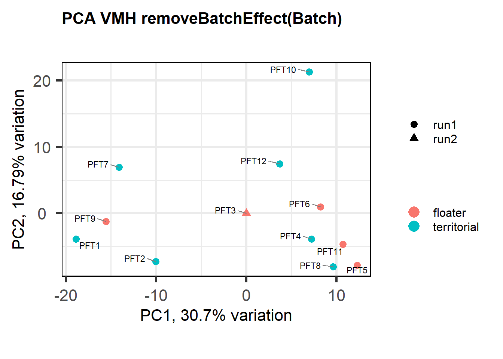
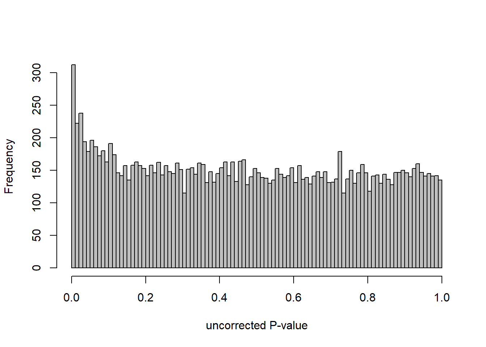
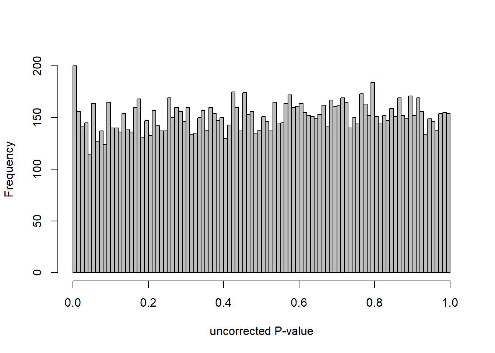
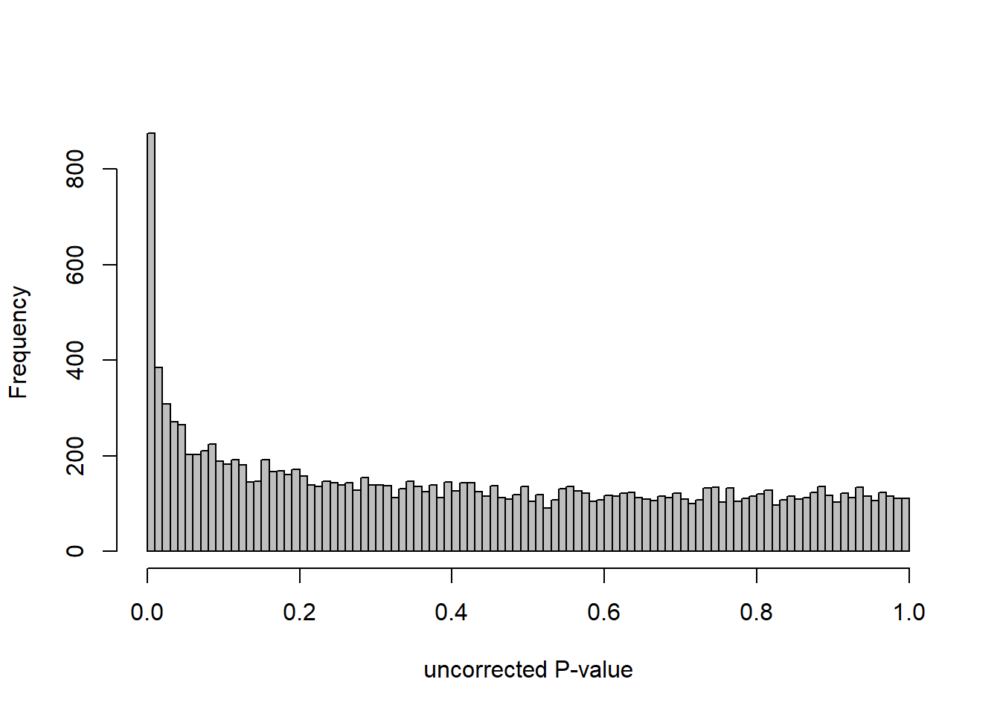
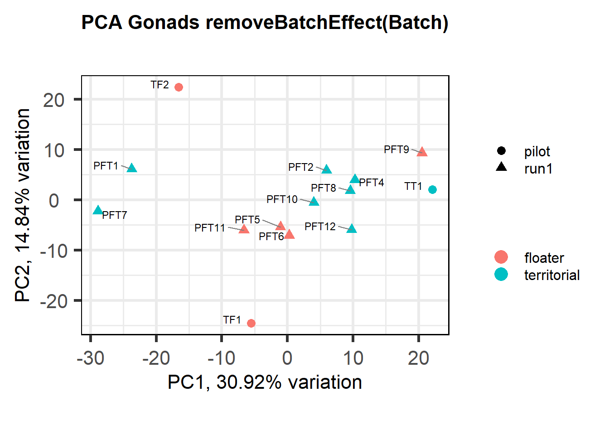
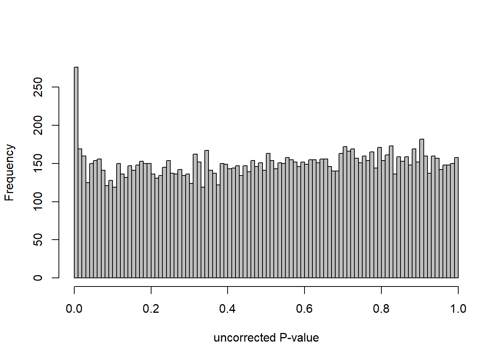

DESeq2 and PCA Analysis
For manuscript: Neurogenomic landscape of male cooperative behavior in a wild bird
Last Substantive change November 2023
Last Knit “2024-01-04”
Our primary aim is to explore whether among-individual variation in T modulated cooperative behaviour is associated with differences in gene expression. We have 5 main traits that were measured.
- Status: Territorial or Floater
- Testosterone concentration
- mean_T is best estimate of among individual variation in T across all birds (’r summary(behav$mean_T)`). This measure is repeatable (Ryder et al 2020) within individuals and could be considered a hormonal phenotype.
- Strength
- Mean number of social interactions per 10 hr day as detected by telemetry.
Here, I take the filtered dataset from the QC process, and run a whole brain analysis, as well as individual tissue analysis. I also explore the relationships between our explanatory variables.
key<- read.csv("../data_filtered/data_key_Parsed_ReplicatesRemoved.csv")
behav<- read.csv("../data_unfiltered/PIPFIL_T_and_behav_data.csv")
rownames(key)<- key$X
key$Color_ID<- sub("/","", key$Color_ID)
key<- plyr::rename(key, replace=c("Color_ID"="colorID"))
behav$status<- plyr::revalue(behav$status, c("floa"="floater", "terr"="territorial"))
key_behav<- merge(key, behav, by="colorID")
key_behav<- key_behav[!is.na(key_behav$last_behav),]
#create a data.frame with all of the observations.
not_in_behav<- key[!key$X %in% key_behav$X,]
cols_not_key<- colnames(key_behav)[!colnames(key_behav) %in% colnames(key)]
cols_not_key_df<- data.frame(matrix(NA, nrow = nrow(not_in_behav), ncol = length(cols_not_key)))
colnames(cols_not_key_df)<- cols_not_key
not_in_behav<- cbind(not_in_behav, cols_not_key_df)
key_behav<- rbind(key_behav, not_in_behav)
rownames(key_behav)<- key_behav$X
key_behav$Tissue<- factor(key_behav$Tissue, levels=c("GON","PIT","VMH","AH","PVN","POM","ICO","GCT","AI","TNA","LS", "BSTm"))
key_behav<- key_behav[order(rownames(key_behav)),]
key_behav$Class<- as.factor(key_behav$Class)
key_behav$Class<- revalue(key_behav$Class, replace=c("SCB floater"="Predefinitive floater", "DCB floater "="Definitive floater", "DCB territorial"="Territorial"))
key_behav$Class<- factor(key_behav$Class, levels=c("Predefinitive floater", "Definitive floater", "Territorial"))
rownames(key_behav)<- key_behav$sampleID
key_behav<- key_behav[order(key_behav$sampleID),]
key_behav$Year<- as.factor(key_behav$Year)
key_behav$Batch<- as.factor(key_behav$Batch)
key_behav$Status<- as.factor(key_behav$Status)
key_behav_unique<- key_behav[!duplicated(key_behav$colorID),]
#read the raw count data
data<- read.csv("../data_filtered/data_RawCounts_all_ReplicatesRemoved_antisense_V2.csv")
data$X[data$X=="LOC113993669"] <- "CYP19A1"
data$X[data$X=="LOC113983511"] <- "OXT"
data$X[data$X=="LOC113983498"] <- "AVP"
data$X[data$X=="LOC113982601"] <- "AVPR2"
rownames(data)<- data$X
data$X<- NULL
### Gene Ontology
go_terms<- read.csv("../GO_annotations/pfil_GO_key_raw.csv")
go_terms<- plyr::rename(go_terms, replace=c("GeneID"="gene"))
go2gene_bp<- go_terms[which(go_terms$Aspect=="P"),c("GO_ID", "gene")]
go_obo<- read.csv("../GO_annotations/ontology_obo_out.csv")
go_obo<- plyr::rename(go_obo, replace=c("id"="GO_ID"))
go2name_bp<- go_obo[which(go_obo$namespace=="biological_process"),c("GO_ID", "name")]
## annotating the LOC no
genes_key<- read.csv("../GO_annotations/Maggies_annotations_modifiedR.csv")
genes_key<- plyr::rename(genes_key, replace=c("GeneID"="gene"))
genes_key$gene[genes_key$gene=="LOC113993669"] <- "CYP19A1"
genes_key$gene[genes_key$gene=="LOC113983511"] <- "OXT"
genes_key$gene[genes_key$gene=="LOC113983498"] <- "AVP"
genes_key$gene[genes_key$gene=="LOC113982601"] <- "AVPR2"
data_genes<- data.frame(gene=rownames(data))
genes_key<- merge(data_genes, genes_key, by="gene", all.x=TRUE)
#genes_key<- genes_key[which(grepl("LOC[0-9]+",genes_key$gene)),]
genes_key$display_gene_ID<- ifelse(grepl("LOC[0-9]+", genes_key$gene) & !grepl("LOC[0-9]+",genes_key$best_anno) & !is.na(genes_key$best_anno), paste0(genes_key$gene," (",genes_key$best_anno,")"), as.character(genes_key$gene))
genes_key<- genes_key[,c("gene","best_anno","display_gene_ID")]
candidates2<- c("AR", "SRD5A2", "CYP19A1", "ESR1", "ESR2", "PGR","GNRH1", "PRL","PRLR","VIP", "VIPR1", "VIPR2","OXT", "OXTR", "AVP", "AVPR1A", "AVPR1B", "AVPR2")I have to run each tissue separately in part because of linear combinations of batch variables and tissues (some tissues were sequenced only on a single flow cell) that means DESeq2 throws a “model not full rank” error. But also we are interested in the within-tissue gene expression.
1 Gonads (GON)
I will use the first two tissues to demonstrate the processes applied across all tissues, but code echoing will be suppressed in future tissues so as to save space.
tissue="GON"
gon_key<- subset(key_behav, Tissue==tissue)
gon_key<- droplevels(gon_key)
gon_data<- data[,colnames(data) %in% rownames(gon_key)]
start<- nrow(gon_data)
#remove genes with less than 5 reads
gon_data$avg_count<- apply(gon_data, 1, mean)
gon_data<- gon_data[gon_data$avg_count>5,]
gon_data$avg_count<-NULL
#remove genes where >50% of samples have 0 gene expression
gon_data$percent_0<- apply(gon_data, 1, function(x)length(x[x==0]))
thresh<- ncol(gon_data)/2
gon_data<- gon_data[gon_data$percent_0<=thresh,]
gon_data$percent_0<-NULLBefore filtering we had 16854 genes, after filtering for mean read count and excluding genes where >50% of samples had a count of 0 we are left with 16169
1.1 Checking the sampling
Before I go into the analyses, I am going to check that the sampling is equal across batches with respect to our variables of interest. With respect to Status we have gonad samples for 16, with respect to T and the tracking data we have 12 samples.
Here, we will run all the data to check for DEGs against status, then subset the data to only include those individuals with T and behavioural data.
fsb<- fisher.test(table(gon_key$Status, gon_key$Batch))
knitr::kable(table(gon_key$Status, gon_key$Batch), caption=paste0("Status across sequencing runs, fisher test p=", fsb$p.value)) %>% kable_styling()| pilot | run1 | |
|---|---|---|
| floater | 2 | 5 |
| territorial | 2 | 7 |
fsy<- fisher.test(table(gon_key$Status, gon_key$Year))
knitr::kable(table(gon_key$Status, gon_key$Year), caption=paste0("Status across sampling years, fisher test p=", fsy$p.value)) %>% kable_styling()| 2015 | 2017 | 2018 | |
|---|---|---|---|
| floater | 2 | 3 | 2 |
| territorial | 2 | 4 | 3 |
1.2 Status GON
First, I will run through a data checking process. I will check for outliers, and then find out how our potential nuisance variables effect our gene expression data. If they have effects they will be incorporated into the final DESeq2 models.
1.2.1 Expression data exploration
dd<- DESeqDataSetFromMatrix(countData=gon_data, colData=gon_key, design= ~ Status)
dd<- DESeq(dd)
dd<- dd[which(mcols(dd)$betaConv),] #remove any genes that didn't converge.
plotDispEsts(dd)
#plot a PCA of our samples to look for suspicious samples and any obvious patterning with respect to our interest variables
vsd_data<- getVarianceStabilizedData(dd)
p <- pca(vsd_data, metadata = gon_key)
a<- biplot(p, lab=gon_key$Harvest_ID, colby="Status", shape="Batch", legendPosition="right", title="Gonads all samples PCA") + peri_figure
a
## check to see how our interest and nuisance variables are correlated to the PC axes. This will help decide on model form for DESeq.
b<- eigencorplot(p, metavars = c("time_kill","Batch","Year", "Status"))FALSE [1] "Batch"
FALSE [1] "Status"
FALSE [1] "Year"
#use WGCNA connectivity measure to identify outliers.
datExpr0<- as.data.frame(t(vsd_data))
#gsg<- goodSamplesGenes(datExpr0, verbose=3)
#gsg$allOK
A=adjacency(t(datExpr0),type="signed")
#-----Calculate whole network connectivity
k=as.numeric(apply(A,2,sum))-1
#-----Standardized connectivity
Z.k=scale(k)
thresholdZ.k=-2.5
outlierColor=ifelse(Z.k<thresholdZ.k,"red","black")
sampleTree = flashClust(as.dist(1-A), method = "average")
#-----Convert traits to colors
datColors=data.frame(outlier=outlierColor)
#-----Plot the sample dendrogram
plotDendroAndColors(sampleTree,groupLabels=names(datColors),
colors=datColors,main="Sample dendrogram and trait heatmap")
Based on the eigencor plot, I will include Batch as a variable in my analyses, as it is associated with PC4.
1.2.1.1 Corrections applied
Also let’s see how the data look when we account for Batch in our model by using limma::RemoveBatchEffect()
#remove batch effect
mat<- limma::removeBatchEffect(vsd_data, gon_key$Batch)
p <- pca(mat, metadata = gon_key)
biplot(p, lab=gon_key$Harvest_ID, colby="Status", shape="Batch", legendPosition="right", title="PCA Gonads removeBatchEffect(Batch)")
#use this if Batch and Year are both pinged in the previous section.
eigencorplot(p, metavars = c("Batch","Year", "Status"))FALSE [1] "Batch"
FALSE [1] "Status"
FALSE [1] "Year"
wgcnadata<- as.data.frame(t(mat))
traits<- gon_key[, c("Batch", "Year")]
traits$pilot<- as.numeric(ifelse(traits$Batch=="pilot",1,0))
traits$Run1<- as.numeric(ifelse(traits$Batch=="run1",1,0))
traits$Run2<- as.numeric(ifelse(traits$Batch=="run2",1,0))
traits$yr2015<- as.numeric(ifelse(traits$Year=="2015",1,0))
traits$yr2017<- as.numeric(ifelse(traits$Year=="2017",1,0))
traits$yr2018<- as.numeric(ifelse(traits$Year=="2018",1,0))
traits<- traits[,-(1:2)]
A=adjacency(t(wgcnadata),type="signed")
#-----Calculate whole network connectivity
k=as.numeric(apply(A,2,sum))-1
#-----Standardized connectivity
Z.k=scale(k)
thresholdZ.k=-2.5
outlierColor=ifelse(Z.k<thresholdZ.k,"red","black")
sampleTree = flashClust(as.dist(1-A), method = "average")
#-----Convert traits to colors
traitColors=data.frame(numbers2colors(traits,signed=FALSE))
dimnames(traitColors)[[2]]=paste(names(traits))
datColors=data.frame(outlier=outlierColor,traitColors)
#-----Plot the sample dendrogram
plotDendroAndColors(sampleTree,groupLabels=names(datColors),
colors=datColors,main="Sample dendrogram and trait heatmap")
1.2.2 Analysis
Now run DEseq with the updated model form and extract DEGs.
Formula ~ Batch + Status.
varname="Status"
design(dd)<- formula(~ Batch + Status)
dd<- DESeq(dd)
res<- results(dd, alpha=0.1)
res<- res[order(res$padj),]
summary(res)FALSE
FALSE out of 16169 with nonzero total read count
FALSE adjusted p-value < 0.1
FALSE LFC > 0 (up) : 2, 0.012%
FALSE LFC < 0 (down) : 0, 0%
FALSE outliers [1] : 18, 0.11%
FALSE low counts [2] : 0, 0%
FALSE (mean count < 2)
FALSE [1] see 'cooksCutoff' argument of ?results
FALSE [2] see 'independentFiltering' argument of ?resultspar(mfrow=c(1,2))
DESeq2::plotMA(res, ylim = c(-2, 2), main=paste("MA-plot",tissue,"exp",design(dd)))
hist(res$pvalue, breaks=100, col="grey", main="", xlab="uncorrected P-value")
FALSE null device
FALSE 1des<- as.character(design(dd))
des<- paste0(des, collapse=" ")
out_res<- data.frame(res)
out_res$gene<- row.names(out_res)
out_res<- merge(out_res, genes_key,by="gene")
out_res<- out_res[order(out_res$pvalue),]
out_res$Tissue<- tissue
out_res$design<- des
out_res$fdrtool<- "no"
write.csv(out_res, file="../DE_results/results_GON_Status.csv", row.names=TRUE)

1.2.3 Gene Ontology
Conduct Gene Set enrichment analysis (GSEA) when there are few significant differentially expressed genes. This will leverage the whole list. Then, I will also conduct foreground background testing to get an explicit view of either the top genes after FDR correction (q<0.1), or the top genes without FDR correction (p<0.05)

write.csv(gsearesult, file=paste0("../DE_results/GSEA_BP_",tissue,"_",varname,".csv"), row.names=FALSE)
knitr::kable(enrich_results[1:10,-1], caption=paste0("Top 10 enriched GO BP in ",tissue, " according to ",varname)) %>% kable_styling()| Description | GeneRatio | BgRatio | pvalue | p.adjust | qvalue | geneID | Count | n_annotated | |
|---|---|---|---|---|---|---|---|---|---|
| GO:0010951 | negative regulation of endopeptidase activity | 21/817 | 79/12553 | 0.0000000 | 0.0000333 | 0.0000326 | CPAMD8/LOC113992168/KNG1/SERPINB1/SERPINA10/SPP2/ITIH4/FETUB/LOC113991485/ITIH2/VTN/LOC113989405/C3/SERPINC1/SERPINF2/AGT/BIRC6/HRG/C5/USP14/SERPINF1 | 21 | 817 |
| GO:0030449 | regulation of complement activation | 13/817 | 37/12553 | 0.0000003 | 0.0002476 | 0.0002422 | C6/LOC113984930/LOC113992168/F2/C8B/VTN/C3/CFI/LOC113986226/C9/C5/C8A/CFH | 13 | 817 |
| GO:0042730 | fibrinolysis | 8/817 | 14/12553 | 0.0000007 | 0.0003848 | 0.0003765 | FGB/F2/FGG/PLG/LOC113992335/SERPINF2/FGA/HRG | 8 | 817 |
| GO:0051918 | negative regulation of fibrinolysis | 7/817 | 11/12553 | 0.0000013 | 0.0004807 | 0.0004702 | F2/PLG/LOC113992335/SERPINF2/APOH/THBD/HRG | 7 | 817 |
| GO:0002576 | platelet degranulation | 22/817 | 108/12553 | 0.0000014 | 0.0004807 | 0.0004702 | CLEC3B/SPARC/FGB/FGG/KNG1/SPP2/ITIH4/ENDOD1/PLG/F5/ALB/LOC113992335/SERPINF2/FGA/APOH/LOC114001803/LOC113992533/HRG/TMX3/LOC113989827/TMSB4X/APOOL | 22 | 817 |
| GO:0007596 | blood coagulation | 24/817 | 128/12553 | 0.0000022 | 0.0006423 | 0.0006284 | GATA5/ANO6/FGB/F2/FGG/SERPINA10/PROC/LOC113995989/F9/F7/PLG/F5/SERPINC1/LOC113992335/CAPZB/FGA/LOC113995424/THBD/IRF2/COL1A2/RCOR1/PRSS56/COL1A1/GATA2 | 24 | 817 |
| GO:0006957 | complement activation, alternative pathway | 8/817 | 18/12553 | 0.0000076 | 0.0017094 | 0.0016724 | LOC113984930/C8B/C3/LOC113986226/C9/C5/C8A/CFH | 8 | 817 |
| GO:0044267 | cellular protein metabolic process | 27/817 | 165/12553 | 0.0000078 | 0.0017094 | 0.0016724 | STC2/LAMB2/CP/LOC113992168/F2/FGG/KNG1/SERPINA10/SPP2/PROC/GSN/LOC114003546/CCN1/PLG/ITIH2/F5/C3/SERPINC1/ALB/APOA5/LOC113992335/LOC113991601/FGA/TTR/MMP2/P4HB/SNCA | 27 | 817 |
| GO:0006958 | complement activation, classical pathway | 9/817 | 27/12553 | 0.0000323 | 0.0063096 | 0.0061727 | C6/LOC113992168/C8B/C3/CFI/LOC113986226/C9/C5/C8A | 9 | 817 |
| GO:0019835 | cytolysis | 5/817 | 10/12553 | 0.0002207 | 0.0352323 | 0.0344678 | C6/C8B/C9/C5/C8A | 5 | 817 |
go_table<- enrich_results[1:10,c("ID","Description","GeneRatio","pvalue","p.adjust")]
go_table<- go_table[!is.na(go_table$ID),]
go_table$pvalue<- signif(go_table$pvalue,2)
go_table$p.adjust<- signif(go_table$p.adjust,2)
go_table<- ggtexttable(as.data.frame(go_table),theme = ttheme(base_size = 6,padding=unit(c(4,10),"pt")),rows=NULL) %>% tab_add_title(text = main.title, size=6, padding = unit(0.1, "line"))%>% tab_add_title(text = main.title, size=6, padding = unit(0.1, "line"))
write.csv(enrich_results, file=paste0("../DE_results/GO_BP_",tissue,"_",varname,".csv"), row.names=FALSE)Below is the code for making the figures in the supplement.
g2<- ggarrange(ggarrange(vp,g,widths=c(0.7,1), labels=c("A","B"),ncol=2,nrow=1),ggarrange(gseaplot,go_table, ncol=2,nrow=1, labels=c("C","D")), nrow=2)
#g2
ggsave(filename="../DE_results/supp_figure_GON_status.png", plot=g2, device="png" ,height=180, width=200, units="mm", bg="white")1.3 Testosterone GON
Given that the behaviors are best correlated with mean T, then this is our variable of interest
1.3.1 Expression data exploration
But first, we need to look at these new data in the gonads with the new subset with respect to our interest variables in the PCA.
rm(list= ls()[!(ls() %in% c(keep,"gon_data","gon_behav"))])
tissue="GON"
gon_behav<- subset(key_behav, Tissue==tissue)
gon_behav<- subset(gon_behav, Batch!="pilot")
gon_behav<- droplevels(gon_behav)
gon_data<- data[,colnames(data) %in% rownames(gon_behav)]
start<- nrow(gon_data)
#remove genes with less than 5 reads
gon_data$avg_count<- apply(gon_data, 1, mean)
gon_data<- gon_data[gon_data$avg_count>5,]
gon_data$avg_count<-NULL
#remove genes where >50% of samples have 0 gene expression
gon_data$percent_0<- apply(gon_data, 1, function(x)length(x[x==0]))
thresh<- ncol(gon_data)/2
gon_data<- gon_data[gon_data$percent_0<=thresh,]
gon_data$percent_0<-NULLBefore filtering we had 16854 genes, after filtering for mean read count and excluding genes where >50% of samples had a count of 0 we are left with 16137…
dd<- DESeqDataSetFromMatrix(countData=gon_data, colData=gon_behav, design= ~ mean_T)
dd<- DESeq(dd)
dd<- dd[which(mcols(dd)$betaConv),] #remove any genes that didn't converge.
#plotDispEsts(dd)
vsd_data<- getVarianceStabilizedData(dd)
#vsd_data<- assay(vsd)
write.csv(counts(dd, normalized=TRUE), "../DE_results/data_GON_norm.csv", row.names=TRUE, quote=FALSE)
p <- pca(vsd_data, metadata = gon_behav)
biplot(p, lab=gon_behav$Harvest_ID, colby="mean_T", shape="Year", legendPosition="right", title="mean T in GON")
FALSE [1] "Status"
FALSE [1] "Year"
datExpr0<- as.data.frame(t(vsd_data))
#gsg<- goodSamplesGenes(datExpr0, verbose=3)
#gsg$allOK
A=adjacency(t(datExpr0),type="signed")
#-----Calculate whole network connectivity
k=as.numeric(apply(A,2,sum))-1
#-----Standardized connectivity
Z.k=scale(k)
thresholdZ.k=-2.5
outlierColor=ifelse(Z.k<thresholdZ.k,"red","black")
sampleTree = flashClust(as.dist(1-A), method = "average")
#-----Convert traits to colors
datColors=data.frame(outlier=outlierColor)
#-----Plot the sample dendrogram
plotDendroAndColors(sampleTree,groupLabels=names(datColors),
colors=datColors,main="Sample dendrogram and trait heatmap")
1.3.2 Corrections applied
FALSE [1] "Status"
FALSE [1] "Year"1.3.3 Analysis
DESeq model specification ~ Year + mean_T
This chunk also includes a function I wrote to remove highly influential observations (as measured by Cook’s Distance) from the continuous data. I know from previous iterations of this analysis that there are observations that are highly influential and also DESeq2 does not exclude these from the results in continuous data.
varname="mean_T"
dd<- DESeqDataSetFromMatrix(countData=gon_data, colData=gon_behav, design= ~ Year + mean_T)
dd<- DESeq(dd)
dd<- dd[which(mcols(dd)$betaConv),]
res<- results(dd, alpha=0.1)
summary(res)FALSE
FALSE out of 16137 with nonzero total read count
FALSE adjusted p-value < 0.1
FALSE LFC > 0 (up) : 33, 0.2%
FALSE LFC < 0 (down) : 111, 0.69%
FALSE outliers [1] : 0, 0%
FALSE low counts [2] : 0, 0%
FALSE (mean count < 5)
FALSE [1] see 'cooksCutoff' argument of ?results
FALSE [2] see 'independentFiltering' argument of ?results#DEseq2 doesn't do outlier removal for continuous variables. I'm doing that here with a bespoke function
res<- rm_continuous_outliers(dd,res)
res<- res[order(res$padj),]
summary(res)FALSE
FALSE out of 16137 with nonzero total read count
FALSE adjusted p-value < 0.1
FALSE LFC > 0 (up) : 33, 0.2%
FALSE LFC < 0 (down) : 111, 0.69%
FALSE outliers [1] : 37, 0.23%
FALSE low counts [2] : 0, 0%
FALSE (mean count < 5)
FALSE [1] see 'cooksCutoff' argument of ?results
FALSE [2] see 'independentFiltering' argument of ?resultsdes<- as.character(design(dd))
des<- paste0(des, collapse=" ")
out_res<- data.frame(res)
out_res$gene<- row.names(out_res)
out_res<- merge(out_res, genes_key,by="gene")
out_res<- out_res[order(out_res$pvalue),]
out_res$Tissue<- tissue
out_res$design<- des
out_res$fdrtool<- "no"
write.csv(out_res, file="../DE_results/results_GON_mean_T.csv", row.names=TRUE)
par(mfrow=c(1,2))
DESeq2::plotMA(res, ylim = c(-2, 2), main=paste("MA-plot",tissue,"exp",des))
hist(res$pvalue, breaks=100, col="grey", main="", xlab="uncorrected P-value")
FALSE null device
FALSE 1

1.3.4 Gene Ontology


| Description | GeneRatio | BgRatio | pvalue | p.adjust | qvalue | geneID | Count | n_annotated | |
|---|---|---|---|---|---|---|---|---|---|
| GO:0050729 | positive regulation of inflammatory response | 16/1105 | 57/12541 | 0.0000213 | 0.0305125 | 0.0298555 | PDE2A/AGTR1/LOC114003559/IFI35/SNCA/LPL/LOC114000059/TNIP1/TLR2/TGM2/IL1RL1/CEBPB/PLA2G7/CLOCK/ETS1/APP | 16 | 1105 |
| GO:0051412 | response to corticosterone | 7/1105 | 13/12541 | 0.0000432 | 0.0305125 | 0.0298555 | STAR/TH/AVPR1A/LOC113992757/STARD3/LOC113998857/NEFL | 7 | 1105 |
| GO:0050679 | positive regulation of epithelial cell proliferation | 15/1105 | 55/12541 | 0.0000555 | 0.0305125 | 0.0298555 | NR4A3/LOC113991446/HTRA1/OSR2/LOC113991466/MYC/LOC113986457/BMP4/BMP5/FGFR2/IGF1/TWIST1/HRAS/FGF1/ATP7A | 15 | 1105 |
| GO:0006614 | SRP-dependent cotranslational protein targeting to membrane | 19/1105 | 81/12541 | 0.0000593 | 0.0305125 | 0.0298555 | LOC113990217/RPL31/RPL37/RPS20/RPS25/RPL39/RPS12/RPL23/RPL38/RPL22/RPL35/RPL29/RPL32/RPL23A/RPS6/RPL9/RPL5/RPL27/RPL10A | 19 | 1105 |
| GO:0019083 | viral transcription | 20/1105 | 100/12541 | 0.0003898 | 0.1578854 | 0.1544856 | LOC113990217/RPL31/RPL37/RPS20/RPS25/RPL39/RPS12/RPL23/RPL38/RPL22/RPL35/RPL29/RPL32/RPL23A/RPS6/RPL9/RPL5/TPR/RPL27/RPL10A | 20 | 1105 |
| GO:0006825 | copper ion transport | 6/1105 | 13/12541 | 0.0004603 | 0.1578854 | 0.1544856 | ATOX1/HEPHL1/SLC31A1/FKBP4/ATP7A/CUTC | 6 | 1105 |
| GO:0055010 | ventricular cardiac muscle tissue morphogenesis | 7/1105 | 18/12541 | 0.0005396 | 0.1586287 | 0.1552129 | ISL1/FOXC1/FGFR2/LOC113998261/FKBP1A/PTCD2/TPM1 | 7 | 1105 |
| GO:0046928 | regulation of neurotransmitter secretion | 6/1105 | 14/12541 | 0.0007457 | 0.1918374 | 0.1877065 | SNCG/SNCAIP/CPLX2/CPLX1/RHOT1/MCTP1 | 6 | 1105 |
| GO:0021510 | spinal cord development | 8/1105 | 25/12541 | 0.0009806 | 0.1955375 | 0.1913269 | BAG3/PTN/PLXDC1/SUZ12/PHGDH/SRD5A1/NEFL/PTPRS | 8 | 1105 |
| GO:0050772 | positive regulation of axonogenesis | 9/1105 | 31/12541 | 0.0010495 | 0.1955375 | 0.1913269 | SHOX2/METRN/STK25/CHODL/NGF/PLXND1/MAP6/NEFL/SLITRK1 | 9 | 1105 |
1.4 Status x mean T GON
For pulling out candidate genes with interactions
rm(list= ls()[!(ls() %in% c(keep,"gon_data","gon_behav","tissue"))])
varname="Status x mean_T"
dd<- DESeqDataSetFromMatrix(countData=gon_data, colData=gon_behav, design= ~ Year + Status + mean_T + Status:mean_T)
dd<- DESeq(dd,test="LRT",reduced=~Year + Status + mean_T)
#dd<- DESeq(dd)
#dd<- dd[which(mcols(dd)$betaConv),]
#summary(res)
res<- results(dd, alpha=0.1)
res<- rm_continuous_outliers(dd,res)
res<- res[order(res$padj),]
summary(res)FALSE
FALSE out of 16137 with nonzero total read count
FALSE adjusted p-value < 0.1
FALSE LFC > 0 (up) : 5, 0.031%
FALSE LFC < 0 (down) : 7, 0.043%
FALSE outliers [1] : 29, 0.18%
FALSE low counts [2] : 933, 5.8%
FALSE (mean count < 14)
FALSE [1] see 'cooksCutoff' argument of ?results
FALSE [2] see 'independentFiltering' argument of ?resultsdes<- as.character(design(dd))
des<- paste0(des, collapse=" ")
out_res<- data.frame(res)
out_res$gene<- row.names(out_res)
out_res<- merge(out_res, genes_key,by="gene")
out_res<- out_res[order(out_res$padj),]
out_res$Tissue<- tissue
out_res$design<- des
out_res$n_p005<- nrow(out_res[which(out_res$pvalue<0.05),])
out_res$n_q01<- nrow(out_res[which(out_res$padj<0.1),])
out_res$Test<- "LRT_full_interaction"
out_res$fdrtool<- "no"
write.csv(out_res, file="../DE_results/interactions_GON_mean_T_Status.csv", row.names=FALSE)
par(mfrow=c(1,2))
DESeq2::plotMA(res, ylim = c(-2, 2), main=paste("MA-plot",tissue,"exp",des))
hist(res$pvalue, breaks=100, col="grey", main="", xlab="uncorrected P-value")
FALSE null device
FALSE 1How sensitive is the candidate gene results to model form?
1.5 Strength GON
1.5.1 Analysis
formula ~ Year + scale(Strength)
Without scaling strength, DESeq2 would throw a warning, recommending the variable be scaled.
rm(list= ls()[!(ls() %in% c(keep,"gon_data","gon_behav","tissue","dd"))])
varname="Strength"
dd$strength.all_study<- scale(dd$strength.all_study)
design(dd)<- formula(~Year + strength.all_study)
dd<- DESeq(dd)
res<- results(dd, alpha=0.1)
res<- rm_continuous_outliers(dd,res)
summary(res)FALSE
FALSE out of 16137 with nonzero total read count
FALSE adjusted p-value < 0.1
FALSE LFC > 0 (up) : 10, 0.062%
FALSE LFC < 0 (down) : 11, 0.068%
FALSE outliers [1] : 45, 0.28%
FALSE low counts [2] : 0, 0%
FALSE (mean count < 5)
FALSE [1] see 'cooksCutoff' argument of ?results
FALSE [2] see 'independentFiltering' argument of ?resultsres<- res[order(res$padj),]
des<- as.character(design(dd))
des<- paste0(des, collapse=" ")
out_res<- data.frame(res)
out_res$gene<- row.names(out_res)
out_res<- merge(out_res, genes_key,by="gene")
out_res<- out_res[order(out_res$padj),]
out_res$Tissue<- tissue
out_res$design<- des
out_res$fdrtool<- "no"
write.csv(out_res, file="../DE_results/results_GON_Strength.csv", row.names=FALSE)
par(mfrow=c(1,2))
DESeq2::plotMA(res, ylim = c(-2, 2), main=paste("MA-plot",tissue,"exp",des))
hist(res$pvalue, breaks=100, col="grey", main="", xlab="uncorrected P-value")
FALSE null device
FALSE 1

1.5.2 Gene Ontology


| Description | GeneRatio | BgRatio | pvalue | p.adjust | qvalue | geneID | Count | n_annotated | |
|---|---|---|---|---|---|---|---|---|---|
| GO:0045540 | regulation of cholesterol biosynthetic process | 13/919 | 35/12541 | 0.0000005 | 0.0009732 | 0.0009732 | SC5D/MVK/FDFT1/FASN/SEC14L2/ELOVL6/LOC113987727/HMGCS1/LOC114002832/MVD/ACACA/SREBF1/LSS | 13 | 919 |
| GO:0006695 | cholesterol biosynthetic process | 12/919 | 35/12541 | 0.0000038 | 0.0035789 | 0.0035789 | MVK/FDFT1/MSMO1/DHCR24/LOC113987727/HMGCS1/LOC114002832/MVD/ACLY/APOA5/LSS/APOA1 | 12 | 919 |
| GO:0044267 | cellular protein metabolic process | 28/919 | 164/12541 | 0.0000211 | 0.0112266 | 0.0112266 | UBA52/SERPINA10/ADORA2A/LOC113992168/PLG/ITIH2/SERPINC1/F2/TTR/FN1/ALB/TGOLN2/SPP2/LOC113992658/FGG/APOA5/F5/FGA/IGFBP4/CALB1/SERPIND1/SHISA5/LOC113996623/GGA1/CCN1/FSTL3/APOA1/LOC113990797 | 28 | 919 |
| GO:0042730 | fibrinolysis | 7/919 | 14/12541 | 0.0000241 | 0.0112266 | 0.0112266 | PLG/HRG/F2/FGB/FGG/SERPINF2/FGA | 7 | 919 |
| GO:0010951 | negative regulation of endopeptidase activity | 16/919 | 79/12541 | 0.0001629 | 0.0534749 | 0.0534749 | SERPINA10/VTN/LOC113992168/LOC113989405/ITIH2/HRG/SERPINC1/PTTG1/FETUB/SPOCK3/SPP2/SERPINF2/SERPIND1/GAPDH/ITIH4/AGT | 16 | 919 |
| GO:1904158 | axonemal central apparatus assembly | 7/919 | 18/12541 | 0.0001721 | 0.0534749 | 0.0534749 | LOC113997903/LOC113997531/LOC113995484/LOC114001265/LOC113997354/LOC113983738/DNAJB13 | 7 | 919 |
| GO:0070328 | triglyceride homeostasis | 7/919 | 19/12541 | 0.0002554 | 0.0680072 | 0.0680072 | ABCG5/ANGPTL3/APOA5/ANGPTL4/GIP/LIPC/APOA1 | 7 | 919 |
| GO:0006694 | steroid biosynthetic process | 7/919 | 20/12541 | 0.0003682 | 0.0857953 | 0.0857953 | FDFT1/LOC114002832/LOC113992757/STARD3/STAR/LOC113983393/LSS | 7 | 919 |
| GO:0008652 | cellular amino acid biosynthetic process | 7/919 | 21/12541 | 0.0005177 | 0.0957789 | 0.0957789 | OAT/PAH/ASPG/GLUL/GLS/GLUD1/ALDH18A1 | 7 | 919 |
| GO:0060438 | trachea development | 6/919 | 16/12541 | 0.0006437 | 0.0957789 | 0.0957789 | LOC113997903/LOC113997531/LOC113995484/LOC114001265/LOC113997354/LOC113983738 | 6 | 919 |
2 Pituitary (PIT)
2.1 Checking the sampling
Before filtering we had 16854 genes, after filtering for mean read count and excluding genes where >50% of samples had a count of 0 we are left with 14812
Before I go into more detail, I am going to check that the sampling is equal across batches with respect to our variables of interest. With respect to Status we have pit samples for 12, with respect to T and the tracking data.
| run1 | run2 | |
|---|---|---|
| floater | 3 | 2 |
| territorial | 5 | 2 |
| 2017 | 2018 | |
|---|---|---|
| run1 | 6 | 2 |
| run2 | 1 | 3 |

2.1.1 Expression data exploration

FALSE [1] "Batch"
FALSE [1] "Status"
FALSE [1] "Year"
2.1.2 Corrections applied
FALSE [1] "Batch"
FALSE [1] "Status"
FALSE [1] "Year"
Looks controlling for Batch also removes the association with Year. Let’s just include Batch.
2.2 Status PIT
2.2.1 Analysis
Formula = ~ Batch + Status
In this section, I find results with different p-value distributions.
I was following THIS
tutorial by Bernd Klaus and it recommended using fdrtool to
correct these p-values.
varname="Status"
design(dd)<- formula(~ Batch + Status)
dd<- DESeq(dd)
res<- results(dd, alpha=0.1)
res1<- res[!is.na(res$padj),]
res1<- res1[!is.na(res1$pvalue),]
res1$padj<- NULL
res1.fdr<- fdrtool(res1$stat, statistic="normal", plot=FALSE, verbose=FALSE)
res1$padj<- p.adjust(res1.fdr$pval, method="BH")
outs<- res[is.na(res$padj),] # add those outliers back in...
res1<- rbind(res1, outs)
res1<- res1[order(res1$padj),]
summary(res1)FALSE
FALSE out of 14812 with nonzero total read count
FALSE adjusted p-value < 0.1
FALSE LFC > 0 (up) : 8, 0.054%
FALSE LFC < 0 (down) : 6, 0.041%
FALSE outliers [1] : 91, 0.61%
FALSE low counts [2] : 0, 0%
FALSE (mean count < 4)
FALSE [1] see 'cooksCutoff' argument of ?results
FALSE [2] see 'independentFiltering' argument of ?resultsdes<- as.character(design(dd))
des<- paste0(des, collapse=" ")
out_res<- data.frame(res1)
out_res$gene<- row.names(out_res)
out_res<- merge(out_res, genes_key,by="gene")
out_res<- out_res[order(out_res$padj),]
out_res$Tissue<- tissue
out_res$design<- des
out_res$fdrtool<- "yes"
write.csv(out_res, file="../DE_results/results_PIT_status.csv", row.names=FALSE)
par(mfrow=c(2,2))
DESeq2::plotMA(res, ylim = c(-2, 2), main=paste("MA-plot",tissue,"exp",des))
hist(res$pvalue, breaks=20, col="grey", main="", xlab="uncorrected P-value")
DESeq2::plotMA(res1, ylim = c(-2, 2), main="FDR tool corrected PIT Status")
hist(res1.fdr$pval, breaks=20, col="grey", main="P-value correction 'fdrtool'", xlab="'Corrected' P-value")
FALSE null device
FALSE 1

2.2.2 Gene Ontology


| Description | GeneRatio | BgRatio | pvalue | p.adjust | qvalue | geneID | Count | n_annotated | |
|---|---|---|---|---|---|---|---|---|---|
| GO:0007422 | peripheral nervous system development | 7/426 | 23/12076 | 0.0000097 | 0.0125810 | 0.0123228 | LOC113999850/SOX10/SERPINI1/LOC113986199/PMP22/NTF3/GFRA3 | 7 | 426 |
| GO:0051384 | response to glucocorticoid | 8/426 | 41/12076 | 0.0000770 | 0.0498862 | 0.0488623 | PAM/ALPL/SDC1/LOC113993087/ADIPOQ/CASP7/TYMS/SPARC | 8 | 426 |
| GO:0032496 | response to lipopolysaccharide | 12/426 | 100/12076 | 0.0002011 | 0.0752137 | 0.0736699 | GCH1/ALPL/FMO1/CASP7/PCK1/CNR1/DCN/VCAM1/OPRM1/SPARC/CNP/LIAS | 12 | 426 |
| GO:0045776 | negative regulation of blood pressure | 5/426 | 17/12076 | 0.0002323 | 0.0752137 | 0.0736699 | GCH1/ADIPOQ/RNLS/CNR1/GJA5 | 5 | 426 |
| GO:0010951 | negative regulation of endopeptidase activity | 9/426 | 73/12076 | 0.0010203 | 0.2106709 | 0.2063470 | SERPIND1/ITIH2/LOC113991485/SERPINF1/COL6A3/SERPINF2/SERPINI1/ITIH4/LOC113992706 | 9 | 426 |
| GO:0006957 | complement activation, alternative pathway | 4/426 | 14/12076 | 0.0011533 | 0.2106709 | 0.2063470 | CFH/C8B/C7/LOC113986241 | 4 | 426 |
| GO:0042552 | myelination | 7/426 | 47/12076 | 0.0012002 | 0.2106709 | 0.2063470 | ADGRG6/MPZ/LOC114000755/PLLP/DHH/MAL2/BCAS1 | 7 | 426 |
| GO:0006836 | neurotransmitter transport | 5/426 | 24/12076 | 0.0013014 | 0.2106709 | 0.2063470 | SLC22A3/LOC113990781/SLC6A2/SLC29A1/SLC6A4 | 5 | 426 |
| GO:0071300 | cellular response to retinoic acid | 7/426 | 51/12076 | 0.0019578 | 0.2445362 | 0.2395173 | SERPINF1/BRINP2/EPHA3/OSR1/PCK1/ADNP2/SLC6A4 | 7 | 426 |
| GO:0007200 | phospholipase C-activating G protein-coupled receptor signaling pathway | 6/426 | 38/12076 | 0.0019694 | 0.2445362 | 0.2395173 | PTGER3/ESR1/P2RY2/CMKLR1/HTR2B/OPRM1 | 6 | 426 |
2.3 Testosterone PIT
2.3.1 Analysis
FALSE
FALSE out of 14812 with nonzero total read count
FALSE adjusted p-value < 0.1
FALSE LFC > 0 (up) : 14, 0.095%
FALSE LFC < 0 (down) : 5, 0.034%
FALSE outliers [1] : 62, 0.42%
FALSE low counts [2] : 0, 0%
FALSE (mean count < 4)
FALSE [1] see 'cooksCutoff' argument of ?results
FALSE [2] see 'independentFiltering' argument of ?results
FALSE null device
FALSE 1

2.3.2 Gene Ontology


| Description | GeneRatio | BgRatio | pvalue | p.adjust | qvalue | geneID | Count | n_annotated | |
|---|---|---|---|---|---|---|---|---|---|
| GO:0010759 | positive regulation of macrophage chemotaxis | 4/470 | 13/12076 | 0.0012238 | 0.5854897 | 0.5782776 | LOC113985892/IL34/CSF1/LOC113983017 | 4 | 470 |
| GO:0045087 | innate immune response | 20/470 | 245/12076 | 0.0014440 | 0.5854897 | 0.5782776 | LOC114003556/ALPK1/IL34/PGLYRP2/SUSD4/INAVA/LOC113996654/CSF1/LOC113992821/SARM1/LOC113992189/LOC113983017/HEXIM1/SRC/NOD1/SLC15A4/S100B/LOC113986435/STYK1/SYK | 20 | 470 |
| GO:0002009 | morphogenesis of an epithelium | 4/470 | 14/12076 | 0.0016610 | 0.5854897 | 0.5782776 | LOC113990794/SOX10/DAG1/TIMELESS | 4 | 470 |
| GO:0046849 | bone remodeling | 4/470 | 14/12076 | 0.0016610 | 0.5854897 | 0.5782776 | P3H4/LTBP3/WNT16/TPH1 | 4 | 470 |
| GO:0006813 | potassium ion transport | 7/470 | 48/12076 | 0.0023882 | 0.6235461 | 0.6158653 | KCNG1/KCNA4/KCNN1/LOC113993556/KCNJ15/KCNAB1/KCNS2 | 7 | 470 |
| GO:0007015 | actin filament organization | 11/470 | 109/12076 | 0.0034092 | 0.6235461 | 0.6158653 | SHROOM4/LOC114003556/SORBS3/CORO6/ERMN/MARCKSL1/LOC113992312/ELMO1/LOC113988218/SAMD14/TMSB15B | 11 | 470 |
| GO:2000134 | negative regulation of G1/S transition of mitotic cell cycle | 5/470 | 27/12076 | 0.0034699 | 0.6235461 | 0.6158653 | GFI1B/DACT1/CDKN1A/CDKN2C/EZH2 | 5 | 470 |
| GO:0032755 | positive regulation of interleukin-6 production | 7/470 | 52/12076 | 0.0037979 | 0.6235461 | 0.6158653 | LOC114003556/LOC114000755/INAVA/IL6R/NOD1/LOC113986435/SYK | 7 | 470 |
| GO:0030335 | positive regulation of cell migration | 16/470 | 197/12076 | 0.0043787 | 0.6235461 | 0.6158653 | LOC113991284/MYLK/DAPK3/HBEGF/LOC113996864/PLP1/CSF1/CXCL12/CTSH/LOC113983017/BMP2/TMSB15B/PAK1/SMO/NTRK3/FLT1 | 16 | 470 |
| GO:0006337 | nucleosome disassembly | 4/470 | 18/12076 | 0.0044873 | 0.6235461 | 0.6158653 | LOC113985909/LOC113985906/SMARCC2/LOC113997381 | 4 | 470 |
2.4 mean T x Status
FALSE
FALSE out of 14812 with nonzero total read count
FALSE adjusted p-value < 0.1
FALSE LFC > 0 (up) : 1205, 8.1%
FALSE LFC < 0 (down) : 1401, 9.5%
FALSE outliers [1] : 37, 0.25%
FALSE low counts [2] : 0, 0%
FALSE (mean count < 4)
FALSE [1] see 'cooksCutoff' argument of ?results
FALSE [2] see 'independentFiltering' argument of ?results
FALSE null device
FALSE 12.5 Strength PIT
2.5.1 Analysis
Formula: ~ Batch + scale(Strength)
FALSE
FALSE out of 14812 with nonzero total read count
FALSE adjusted p-value < 0.1
FALSE LFC > 0 (up) : 387, 2.6%
FALSE LFC < 0 (down) : 113, 0.76%
FALSE outliers [1] : 207, 1.4%
FALSE low counts [2] : 0, 0%
FALSE (mean count < 4)
FALSE [1] see 'cooksCutoff' argument of ?results
FALSE [2] see 'independentFiltering' argument of ?results
FALSE null device
FALSE 1

As you can see above, PFT3 has consistently high leverage on the social network analysis. Even if I play around with the outlier theshold this I am always getting non-linear plots like above. So, let’s see what happens when I remove this sample.
2.5.2 Re-analysis - outlier removed
FALSE
FALSE out of 14812 with nonzero total read count
FALSE adjusted p-value < 0.1
FALSE LFC > 0 (up) : 109, 0.74%
FALSE LFC < 0 (down) : 13, 0.088%
FALSE outliers [1] : 58, 0.39%
FALSE low counts [2] : 0, 0%
FALSE (mean count < 2)
FALSE [1] see 'cooksCutoff' argument of ?results
FALSE [2] see 'independentFiltering' argument of ?results
FALSE null device
FALSE 1

2.5.3 Gene Ontology


| Description | GeneRatio | BgRatio | pvalue | p.adjust | qvalue | geneID | Count | n_annotated | |
|---|---|---|---|---|---|---|---|---|---|
| GO:0019934 | cGMP-mediated signaling | 7/1174 | 15/12076 | 0.0002572 | 0.3249333 | 0.3247639 | PDE2A/NPR1/NPR2/EDNRB/LOC113993563/HTR2C/AQP1 | 7 | 1174 |
| GO:0043116 | negative regulation of vascular permeability | 7/1174 | 16/12076 | 0.0004190 | 0.3249333 | 0.3247639 | PDE2A/CLDN5/ANGPT4/DDAH1/ADORA2A/LOC113996612/ARHGAP35 | 7 | 1174 |
| GO:0009566 | fertilization | 7/1174 | 17/12076 | 0.0006528 | 0.3249333 | 0.3247639 | TDRD9/BAX/AAAS/LOC113990833/TDRKH/SYCP2/YBX3 | 7 | 1174 |
| GO:0034097 | response to cytokine | 11/1174 | 38/12076 | 0.0007119 | 0.3249333 | 0.3247639 | LOC114001824/MAPKAPK2/MCL1/TIMP2/LOC113992821/BCL2L1/IL6R/LOC113984425/ALDH1A2/TNFRSF11A/TYMS | 11 | 1174 |
| GO:0046777 | protein autophosphorylation | 28/1174 | 155/12076 | 0.0009200 | 0.3249333 | 0.3247639 | STK11/MAP3K11/CAD/MAPKAPK2/DAPK3/CHEK2/LOC114000515/PIM1/MARK2/MKNK2/CAMK2B/VRK2/FGFR1/ACVR1B/LOC113983017/STK39/CDK5/MAP3K12/LOC113994408/DYRK1A/CSNK1G2/LOC113999057/ERBB2/DDR2/FER/EIF2AK2/NTRK1/ATP13A2 | 28 | 1174 |
| GO:0016525 | negative regulation of angiogenesis | 17/1174 | 77/12076 | 0.0009651 | 0.3249333 | 0.3247639 | PRL/NPR1/PTPRM/AGBL5/CLDN5/ADGRB2/HSPG2/ISM1/LOC113993563/EPHA2/SEMA3E/SPRY2/KLF4/GADD45A/THBS4/FASLG/HGS | 17 | 1174 |
| GO:1902430 | negative regulation of amyloid-beta formation | 6/1174 | 14/12076 | 0.0012596 | 0.3562365 | 0.3560508 | LOC113988015/LOC113987965/SORL1/CHRNA7/PIN1/PRNP | 6 | 1174 |
| GO:0030259 | lipid glycosylation | 5/1174 | 10/12076 | 0.0014289 | 0.3562365 | 0.3560508 | ST3GAL2/ST3GAL4/B3GALT1/LOC114003933/GBGT1 | 5 | 1174 |
| GO:0007015 | actin filament organization | 21/1174 | 109/12076 | 0.0016920 | 0.3562365 | 0.3560508 | SAMD14/LOC113988218/LOC113992312/CORO1B/SORBS3/INPPL1/KPTN/LOC114003556/TPM4/TMOD1/CORO6/MYO1D/SHROOM4/FAT1/RHOH/HIP1/SHROOM2/LMOD1/HIP1R/MYO5C/RHOB | 21 | 1174 |
| GO:0070527 | platelet aggregation | 11/1174 | 42/12076 | 0.0017635 | 0.3562365 | 0.3560508 | HSPB1/ITGA2B/MYL9/STXBP1/COMP/FIBP/PEAR1/LOC114002136/RAP2B/ITGB3/METAP1 | 11 | 1174 |
3 Ventromedial Hypothalamus (VMH)
3.1 Checking the sampling
Before filtering we had 16854 genes, after filtering for mean read count and excluding genes where >50% of samples had a count of 0 we are left with 15220
Before I go into more detail, I am going to check that the sampling is equal across batches with respect to our variables of interest. With respect to Status we have vmh samples for 16, with respect to T and the tracking data.
| pilot | run1 | run2 | |
|---|---|---|---|
| floater | 2 | 4 | 1 |
| territorial | 2 | 7 | 0 |
| 2015 | 2017 | 2018 | |
|---|---|---|---|
| pilot | 4 | 0 | 0 |
| run1 | 0 | 6 | 5 |
| run2 | 0 | 1 | 0 |

The majority of our data in VMH is in run 1.
3.1.1 Expression data exploration

FALSE [1] "Batch"
FALSE [1] "Status"
FALSE [1] "Year"

3.1.2 Corrections applied
FALSE [1] "Status"
FALSE [1] "Year"Looks like controlling for Batch is sufficient here, as Batch is highly correlated with Year.
3.2 Status VMH
3.2.1 Analysis
Formula = ~ Batch + Status
FALSE
FALSE out of 15220 with nonzero total read count
FALSE adjusted p-value < 0.1
FALSE LFC > 0 (up) : 0, 0%
FALSE LFC < 0 (down) : 3, 0.02%
FALSE outliers [1] : 4, 0.026%
FALSE low counts [2] : 0, 0%
FALSE (mean count < 5)
FALSE [1] see 'cooksCutoff' argument of ?results
FALSE [2] see 'independentFiltering' argument of ?results
FALSE null device
FALSE 1

3.2.2 Gene Ontology


| Description | GeneRatio | BgRatio | pvalue | p.adjust | qvalue | geneID | Count | n_annotated | |
|---|---|---|---|---|---|---|---|---|---|
| GO:0032981 | mitochondrial respiratory chain complex I assembly | 10/615 | 49/12283 | 0.0001285 | 0.1376210 | 0.1376210 | ACAD9/NDUFA5/NDUFS7/TIMM21/NDUFA10/NDUFS3/NDUFV2/NDUFB9/NDUFA8/NDUFAF3 | 10 | 615 |
| GO:0006614 | SRP-dependent cotranslational protein targeting to membrane | 13/615 | 81/12283 | 0.0001773 | 0.1376210 | 0.1376210 | RPS15A/RPS23/RPS29/RPL27A/RPL35A/RPL19/RPS21/RPS24/UBA52/LOC113989206/RPS6/RPS8/RPL6 | 13 | 615 |
| GO:0000184 | nuclear-transcribed mRNA catabolic process, nonsense-mediated decay | 14/615 | 112/12283 | 0.0013789 | 0.4774939 | 0.4774939 | RPS15A/RPS23/RPS29/RPL27A/RPL35A/RPL19/RPS21/RPS24/UBA52/PNLDC1/LOC113989206/RPS6/RPS8/RPL6 | 14 | 615 |
| GO:0019083 | viral transcription | 13/615 | 100/12283 | 0.0014081 | 0.4774939 | 0.4774939 | RPS15A/RPS23/RPS29/RPL27A/RPL35A/RPL19/RPS21/RPS24/UBA52/LOC113989206/RPS6/RPS8/RPL6 | 13 | 615 |
| GO:0051604 | protein maturation | 5/615 | 18/12283 | 0.0015383 | 0.4774939 | 0.4774939 | TSPAN5/LOC114002160/STUB1/TSPAN15/TSPAN33 | 5 | 615 |
| GO:0006413 | translational initiation | 14/615 | 119/12283 | 0.0024636 | 0.5339842 | 0.5339842 | RPS15A/RPS23/RPS29/RPL27A/RPL35A/RPL19/RPS21/RPS24/UBA52/EIF3J/LOC113989206/RPS6/RPS8/RPL6 | 14 | 615 |
| GO:0006120 | mitochondrial electron transport, NADH to ubiquinone | 7/615 | 38/12283 | 0.0024770 | 0.5339842 | 0.5339842 | NDUFA5/NDUFS7/NDUFA10/NDUFS3/NDUFV2/NDUFB9/NDUFA8 | 7 | 615 |
| GO:0006412 | translation | 16/615 | 148/12283 | 0.0030068 | 0.5339842 | 0.5339842 | IGF2BP3/RPS15A/RPS23/RPS29/RPL27A/RPL35A/RPL19/RPS21/MRPL13/RPS24/GGT7/LOC113989206/RMND1/RPS6/RPS8/RPL6 | 16 | 615 |
| GO:0070207 | protein homotrimerization | 4/615 | 13/12283 | 0.0030966 | 0.5339842 | 0.5339842 | CLYBL/LOC113994845/LOC113996480/LOC113989423 | 4 | 615 |
| GO:0031145 | anaphase-promoting complex-dependent catabolic process | 9/615 | 65/12283 | 0.0048481 | 0.7524203 | 0.7524203 | UBB/ANAPC7/PSMF1/ANAPC2/PSMB7/PSMB4/UBA52/LOC113998129/PSMC5 | 9 | 615 |
3.3 Testosterone VMH
3.3.1 Expression data exploration

FALSE [1] "Batch"
FALSE [1] "Status"
FALSE [1] "Year"
3.3.2 Corrections applied

FALSE [1] "Batch"
FALSE [1] "Status"
FALSE [1] "Year"FALSE Flagging genes and samples with too many missing values...
FALSE ..step 1FALSE [1] TRUEBatch does not account for year here… so have to include both…
3.3.3 Analysis
Formula: ~ Batch + Year + mean_T
FALSE
FALSE out of 15162 with nonzero total read count
FALSE adjusted p-value < 0.1
FALSE LFC > 0 (up) : 3, 0.02%
FALSE LFC < 0 (down) : 8, 0.053%
FALSE outliers [1] : 52, 0.34%
FALSE low counts [2] : 0, 0%
FALSE (mean count < 5)
FALSE [1] see 'cooksCutoff' argument of ?results
FALSE [2] see 'independentFiltering' argument of ?results
FALSE null device
FALSE 1

3.3.4 Gene Ontology


| Description | GeneRatio | BgRatio | pvalue | p.adjust | qvalue | geneID | Count | n_annotated | |
|---|---|---|---|---|---|---|---|---|---|
| GO:0030198 | extracellular matrix organization | 22/514 | 209/12262 | 0.0000660 | 0.0918544 | 0.0918544 | VIT/COL9A1/COL1A1/COL7A1/PDGFRA/COL5A2/ADAMTS14/CCDC80/ITGB3/FBLN5/COLQ/NR2E1/LOC113997171/COL4A2/ADAMTS7/FN1/TGFBI/ADAMTSL5/LOC113998180/LAMB2/LOC113982147/LOC113993281 | 22 | 514 |
| GO:0060285 | cilium-dependent cell motility | 5/514 | 13/12262 | 0.0001235 | 0.0918544 | 0.0918544 | DNAH1/DNAH12/RFX3/CCDC65/LOC113984044 | 5 | 514 |
| GO:0007611 | learning or memory | 8/514 | 50/12262 | 0.0010246 | 0.4615527 | 0.4615527 | GRIN2A/FZD9/S100B/LHX8/MME/CASP3/PSEN1/PTPRZ1 | 8 | 514 |
| GO:0090023 | positive regulation of neutrophil chemotaxis | 5/514 | 21/12262 | 0.0014776 | 0.4615527 | 0.4615527 | LOC113988506/LOC113985892/DNM1L/LOC113988345/RIPOR2 | 5 | 514 |
| GO:0007601 | visual perception | 15/514 | 153/12262 | 0.0019106 | 0.4615527 | 0.4615527 | MFRP/COL1A1/LOC113999869/LOC113993535/NDP/PDE6G/LOC114004117/LOC113987867/NR2E1/ZIC2/SLC24A1/TGFBI/GLRB/LAMB2/LOC113982931 | 15 | 514 |
| GO:0042542 | response to hydrogen peroxide | 7/514 | 44/12262 | 0.0021723 | 0.4615527 | 0.4615527 | COL1A1/DUSP1/STARD3/CASP3/FKBP1B/STK26/PRDX3 | 7 | 514 |
| GO:0002244 | hematopoietic progenitor cell differentiation | 7/514 | 45/12262 | 0.0024815 | 0.4615527 | 0.4615527 | LOC114000366/PDGFRA/PTPRC/TENT2/LOC113997171/PSEN1/SIN3A | 7 | 514 |
| GO:0060041 | retina development in camera-type eye | 7/514 | 45/12262 | 0.0024815 | 0.4615527 | 0.4615527 | MFRP/TENT2/LOC114004117/LOC113987867/NR2E1/LAMB2/LOC113982931 | 7 | 514 |
| GO:0036159 | inner dynein arm assembly | 4/514 | 15/12262 | 0.0028794 | 0.4760682 | 0.4760682 | LOC113981955/DNAH1/DNAH12/TEKT2 | 4 | 514 |
| GO:0001947 | heart looping | 7/514 | 48/12262 | 0.0036142 | 0.5377997 | 0.5377997 | NDRG4/ZIC3/WNT5A/VANGL2/TMED2/PSEN1/SHH | 7 | 514 |
3.4 Status x meanT
FALSE
FALSE out of 15162 with nonzero total read count
FALSE adjusted p-value < 0.1
FALSE LFC > 0 (up) : 10, 0.066%
FALSE LFC < 0 (down) : 16, 0.11%
FALSE outliers [1] : 141, 0.93%
FALSE low counts [2] : 0, 0%
FALSE (mean count < 5)
FALSE [1] see 'cooksCutoff' argument of ?results
FALSE [2] see 'independentFiltering' argument of ?results
FALSE null device
FALSE 1
3.5 Strength VMH
3.5.1 Analysis
Formula ~ Batch + Year + scale(Strength)
FALSE
FALSE out of 15162 with nonzero total read count
FALSE adjusted p-value < 0.1
FALSE LFC > 0 (up) : 28, 0.18%
FALSE LFC < 0 (down) : 19, 0.13%
FALSE outliers [1] : 82, 0.54%
FALSE low counts [2] : 0, 0%
FALSE (mean count < 5)
FALSE [1] see 'cooksCutoff' argument of ?results
FALSE [2] see 'independentFiltering' argument of ?results
FALSE null device
FALSE 1

3.5.2 Gene Ontology


| Description | GeneRatio | BgRatio | pvalue | p.adjust | qvalue | geneID | Count | n_annotated | |
|---|---|---|---|---|---|---|---|---|---|
| GO:0042472 | inner ear morphogenesis | 5/174 | 40/12262 | 0.0002391 | 0.1730775 | 0.1643205 | FGFR2/COL2A1/USH1C/FOXG1/KCNQ4 | 5 | 174 |
| GO:0006488 | dolichol-linked oligosaccharide biosynthetic process | 3/174 | 15/12262 | 0.0011271 | 0.2719956 | 0.2582337 | ALG1/SRD5A3/ALG13 | 3 | 174 |
| GO:0036159 | inner dynein arm assembly | 3/174 | 15/12262 | 0.0011271 | 0.2719956 | 0.2582337 | DNAH12/LOC113981955/CCDC39 | 3 | 174 |
| GO:0007605 | sensory perception of sound | 7/174 | 126/12262 | 0.0021050 | 0.3234432 | 0.3070782 | LOC113990629/COL1A1/OTOG/COL2A1/USH1C/KCNQ4/ATP6V0A4 | 7 | 174 |
| GO:0003341 | cilium movement | 4/174 | 40/12262 | 0.0024034 | 0.3234432 | 0.3070782 | CFAP61/DNAH12/LOC113981955/CCDC39 | 4 | 174 |
| GO:0010765 | positive regulation of sodium ion transport | 3/174 | 20/12262 | 0.0026805 | 0.3234432 | 0.3070782 | LOC113986459/LOC113988585/LOC113999252 | 3 | 174 |
| GO:0021537 | telencephalon development | 3/174 | 23/12262 | 0.0040363 | 0.3331375 | 0.3162820 | LOC113986459/LOC113988585/RFX4 | 3 | 174 |
| GO:0050679 | positive regulation of epithelial cell proliferation | 4/174 | 52/12262 | 0.0062423 | 0.3331375 | 0.3162820 | LOC113986459/LOC113988585/FGFR2/WDR48 | 4 | 174 |
| GO:0000077 | DNA damage checkpoint | 3/174 | 29/12262 | 0.0078260 | 0.3331375 | 0.3162820 | DOT1L/CLSPN/ERCC6 | 3 | 174 |
| GO:0000076 | DNA replication checkpoint | 2/174 | 10/12262 | 0.0083599 | 0.3331375 | 0.3162820 | CLSPN/TIPIN | 2 | 174 |
4 Anterior Hypothalamus (AH)
4.1 Checking the sampling
For the AH, we started with 16854 genes but after filering we have 14926 genes. Before I go into more detail, I am going to check that the sampling is equal across batches with respect to our variables of interest. With respect to Status we have ah samples for 11, with respect to T and the tracking data.
| run2 | |
|---|---|
| floater | 4 |
| territorial | 7 |
| 2017 | 2018 | |
|---|---|---|
| run2 | 6 | 5 |
4.1.1 Expression data exploration

FALSE [1] "Status"
FALSE [1] "Year"
FALSE Flagging genes and samples with too many missing values...
FALSE ..step 1FALSE [1] TRUE
PFT1 and PFT11 cluster with the BSTm as previously identified by the brain tissue PCA plot and the all tissue WGCNA dendrogram. We know that there were issues with the sectioning plane in individual PFT1 that could affect this tissue, but not PFT11.
The effects of removing these samples will be explored for each analysis vs removing a randomly selected pair of samples. These results (not shown) showed similar effects, so these samples were not excluded.
4.2 Status AH
4.2.1 Analysis
Formula = ~ Status

FALSE null device
FALSE 1

4.2.2 Gene Ontology


| Description | GeneRatio | BgRatio | pvalue | p.adjust | qvalue | geneID | Count | n_annotated | |
|---|---|---|---|---|---|---|---|---|---|
| GO:0071850 | mitotic cell cycle arrest | 7/1048 | 14/12134 | 0.0000701 | 0.1385595 | 0.1385595 | DUSP1/CDC14A/RGCC/CDKN1A/DDIAS/CDC14B/FAP | 7 | 1048 |
| GO:0051017 | actin filament bundle assembly | 9/1048 | 29/12134 | 0.0005283 | 0.5222015 | 0.5222015 | DPYSL3/USH1C/ADD2/AIF1L/CALD1/ESPN/EZR/FAM107A/SHROOM2 | 9 | 1048 |
| GO:0000226 | microtubule cytoskeleton organization | 20/1048 | 109/12134 | 0.0009542 | 0.6288193 | 0.6288193 | LOC113996267/LOC113991233/TUBB3/WEE1/MAPT/TACC1/CDK5/CDK5RAP2/SON/APC2/CDC14A/LOC113995052/TBCD/TUBA8/TUBG1/GAS2/SIK3/TBCEL/HAUS6/CDC14B | 20 | 1048 |
| GO:0010389 | regulation of G2/M transition of mitotic cell cycle | 15/1048 | 75/12134 | 0.0016430 | 0.8120696 | 0.8120696 | LOC113996267/LOC113984333/CCP110/ALMS1/LOC113999915/DCTN2/CDK5RAP2/PRKAR2B/LOC113995052/NEDD1/PPP2R1A/TUBG1/LOC113986004/TPX2/HAUS6 | 15 | 1048 |
| GO:0051604 | protein maturation | 6/1048 | 18/12134 | 0.0030639 | 0.9303018 | 0.9303018 | TSPAN33/LMF2/TSPAN14/GALNT2/TSPAN32/LMF1 | 6 | 1048 |
| GO:0000278 | mitotic cell cycle | 19/1048 | 113/12134 | 0.0035755 | 0.9303018 | 0.9303018 | LOC113996267/RRM1/CLTC/LOC113991233/TUBB3/LOC114001298/CDC14A/LOC113995052/NUDT15/TBCD/TUBA8/TADA3/TUBG1/TPX2/ABRAXAS2/LOC113997232/YEATS4/CDC14B/WAPL | 19 | 1048 |
| GO:0070509 | calcium ion import | 7/1048 | 25/12134 | 0.0042182 | 0.9303018 | 0.9303018 | LOC113989062/MCUR1/LOC113994017/CDK5/LOC114000517/LOC113993166/SLC30A1 | 7 | 1048 |
| GO:0000086 | G2/M transition of mitotic cell cycle | 20/1048 | 127/12134 | 0.0060890 | 0.9303018 | 0.9303018 | LOC113996267/LOC113984333/CCP110/USH1C/WEE1/ALMS1/FBXL17/LOC113999915/DCTN2/CDK7/CDK5RAP2/PRKAR2B/LOC113995052/NEDD1/PPP2R1A/TUBG1/CDKN1A/LOC113986004/TPD52L1/HAUS6 | 20 | 1048 |
| GO:0051895 | negative regulation of focal adhesion assembly | 6/1048 | 21/12134 | 0.0071579 | 0.9303018 | 0.9303018 | LOC113988419/LOC113991284/SRC/BCAS3/FAM107A/LRP1 | 6 | 1048 |
| GO:0016485 | protein processing | 11/1048 | 56/12134 | 0.0075717 | 0.9303018 | 0.9303018 | NCSTN/LOC113991284/ECEL1/PCSK7/AEBP1/MMEL1/ECE2/FURIN/ADAM10/PCSK6/PSEN1 | 11 | 1048 |
4.3 Testosterone AH
4.3.1 Analysis
Formula ~ mean_T
FALSE
FALSE out of 14926 with nonzero total read count
FALSE adjusted p-value < 0.1
FALSE LFC > 0 (up) : 1, 0.0067%
FALSE LFC < 0 (down) : 2, 0.013%
FALSE outliers [1] : 33, 0.22%
FALSE low counts [2] : 0, 0%
FALSE (mean count < 5)
FALSE [1] see 'cooksCutoff' argument of ?results
FALSE [2] see 'independentFiltering' argument of ?results
FALSE null device
FALSE 1

4.3.2 Gene Ontology


| Description | GeneRatio | BgRatio | pvalue | p.adjust | qvalue | geneID | Count | n_annotated | |
|---|---|---|---|---|---|---|---|---|---|
| GO:0042572 | retinol metabolic process | 8/632 | 32/12134 | 0.0001789 | 0.2810090 | 0.2810090 | ALDH1A3/LOC113995092/LOC113996821/LOC113999436/LOC114001898/LOC114001962/PNPLA2/RETSAT | 8 | 632 |
| GO:0072205 | metanephric collecting duct development | 4/632 | 10/12134 | 0.0011897 | 0.5788714 | 0.5788714 | CALB1/DLG5/LOC114001962/SHH | 4 | 632 |
| GO:0006414 | translational elongation | 5/632 | 17/12134 | 0.0013827 | 0.5788714 | 0.5788714 | ABTB1/EEF2/GTPBP1/LOC113991380/TSFM | 5 | 632 |
| GO:0042552 | myelination | 8/632 | 45/12134 | 0.0020169 | 0.5788714 | 0.5788714 | ACSBG1/ATRN/CMTM8/EGR2/LOC114001565/LOC114003174/NFASC/SERINC5 | 8 | 632 |
| GO:0009617 | response to bacterium | 8/632 | 46/12134 | 0.0023324 | 0.5788714 | 0.5788714 | C3/GPM6A/LOC113995953/LPL/LSM5/NAALADL2/RAB29/UPK1B | 8 | 632 |
| GO:0061640 | cytoskeleton-dependent cytokinesis | 5/632 | 19/12134 | 0.0023826 | 0.5788714 | 0.5788714 | NOX5/LOC113992196/SEPT10/SEPT2/SEPT4 | 5 | 632 |
| GO:0030301 | cholesterol transport | 4/632 | 12/12134 | 0.0025793 | 0.5788714 | 0.5788714 | APOA1/CD36/LCAT/OSBPL5 | 4 | 632 |
| GO:0043691 | reverse cholesterol transport | 4/632 | 13/12134 | 0.0035736 | 0.7017611 | 0.7017611 | APOA1/APOC3/LCAT/LOC113997963 | 4 | 632 |
| GO:0072089 | stem cell proliferation | 4/632 | 14/12134 | 0.0047992 | 0.7821617 | 0.7821617 | ABCB5/CD34/FGF2/RNF43 | 4 | 632 |
| GO:0042110 | T cell activation | 5/632 | 23/12134 | 0.0058025 | 0.7821617 | 0.7821617 | CD44/KIF13B/PPP3CA/PPP3CB/RAB29 | 5 | 632 |
4.4 Status x mean T
FALSE
FALSE out of 14926 with nonzero total read count
FALSE adjusted p-value < 0.1
FALSE LFC > 0 (up) : 1220, 8.2%
FALSE LFC < 0 (down) : 1340, 9%
FALSE outliers [1] : 32, 0.21%
FALSE low counts [2] : 0, 0%
FALSE (mean count < 5)
FALSE [1] see 'cooksCutoff' argument of ?results
FALSE [2] see 'independentFiltering' argument of ?results
FALSE null device
FALSE 14.5 Strength AH
4.5.1 Analysis
Formula ~ scale(Strength)
FALSE
FALSE out of 14900 with nonzero total read count
FALSE adjusted p-value < 0.1
FALSE LFC > 0 (up) : 3, 0.02%
FALSE LFC < 0 (down) : 1, 0.0067%
FALSE outliers [1] : 0, 0%
FALSE low counts [2] : 0, 0%
FALSE (mean count < 5)
FALSE [1] see 'cooksCutoff' argument of ?results
FALSE [2] see 'independentFiltering' argument of ?results
FALSE null device
FALSE 1

4.5.2 Gene Ontology


| Description | GeneRatio | BgRatio | pvalue | p.adjust | qvalue | geneID | Count | n_annotated | |
|---|---|---|---|---|---|---|---|---|---|
| GO:0008217 | regulation of blood pressure | 9/478 | 58/12115 | 0.0004087 | 0.5554226 | 0.5554226 | LOC113990682/NPR2/ATP1A1/GCGR/GCH1/MC3R/ACTA2/LOC113993563/EXTL1 | 9 | 478 |
| GO:0090305 | nucleic acid phosphodiester bond hydrolysis | 8/478 | 52/12115 | 0.0009033 | 0.6137750 | 0.6137750 | RAD9B/PLSCR1/GEN1/RBBP8/ASTE1/ENPP1/ENPP2/LOC114001323 | 8 | 478 |
| GO:0042493 | response to drug | 19/478 | 226/12115 | 0.0015653 | 0.7091026 | 0.7091026 | DAB1/SFRP2/LOC114000060/LOC114000287/MCM7/ATP1A1/WFDC1/ABCB5/GNAO1/GGH/APOD/LOC113989520/TP73/SORD/ADIPOR2/ATR/AGPAT2/PAM/SREBF1 | 19 | 478 |
| GO:0006911 | phagocytosis, engulfment | 4/478 | 17/12115 | 0.0037808 | 0.7170805 | 0.7170805 | ARHGAP12/DOCK1/MFGE8/GSN | 4 | 478 |
| GO:0051000 | positive regulation of nitric-oxide synthase activity | 4/478 | 17/12115 | 0.0037808 | 0.7170805 | 0.7170805 | NOS1AP/PIK3CB/GCH1/S100A1 | 4 | 478 |
| GO:0006814 | sodium ion transport | 7/478 | 52/12115 | 0.0040939 | 0.7170805 | 0.7170805 | SLC5A3/SLC17A8/SLC12A3/SLC5A11/SLC13A4/SLC38A3/NDUFA9 | 7 | 478 |
| GO:0006027 | glycosaminoglycan catabolic process | 5/478 | 28/12115 | 0.0043368 | 0.7170805 | 0.7170805 | IDS/GLB1L2/SDC1/SGSH/FUCA1 | 5 | 478 |
| GO:0007009 | plasma membrane organization | 5/478 | 28/12115 | 0.0043368 | 0.7170805 | 0.7170805 | LOC113987015/LOC113993146/TLCD2/LOC113991140/LOC113993758 | 5 | 478 |
| GO:0061025 | membrane fusion | 6/478 | 42/12115 | 0.0057369 | 0.7170805 | 0.7170805 | LOC113987015/LOC113993146/LOC113991140/LOC113993758/VAMP3/NSFL1C | 6 | 478 |
| GO:0034341 | response to interferon-gamma | 3/478 | 10/12115 | 0.0059520 | 0.7170805 | 0.7170805 | SLC11A1/CALCOCO2/GCH1 | 3 | 478 |
5 Paraventricular Nucleus (PVN)
5.1 Checking the sampling
For the PVN, we started with 16854 genes but after filering we have 15151 genes. Before I go into more detail, I am going to check that the sampling is equal across batches with respect to our variables of interest. With respect to Status we have pvn samples for 12, with respect to T and the tracking data.
| run2 | |
|---|---|
| floater | 5 |
| territorial | 7 |
5.1.1 Expression data exploration

FALSE [1] "Status"
FALSE [1] "Year"
FALSE Flagging genes and samples with too many missing values...
FALSE ..step 1FALSE [1] TRUE
Looks like we don’t have any outliers, nor do we need to include Year (or Batch) as a covariate.
5.2 Status PVN
5.2.1 Analysis
Formula = ~ Status
FALSE
FALSE out of 15151 with nonzero total read count
FALSE adjusted p-value < 0.1
FALSE LFC > 0 (up) : 27, 0.18%
FALSE LFC < 0 (down) : 15, 0.099%
FALSE outliers [1] : 19, 0.13%
FALSE low counts [2] : 0, 0%
FALSE (mean count < 2)
FALSE [1] see 'cooksCutoff' argument of ?results
FALSE [2] see 'independentFiltering' argument of ?results
FALSE null device
FALSE 1

5.2.2 Gene Ontology


| Description | GeneRatio | BgRatio | pvalue | p.adjust | qvalue | geneID | Count | n_annotated | |
|---|---|---|---|---|---|---|---|---|---|
| GO:0003341 | cilium movement | 11/447 | 38/12245 | 0.0000001 | 0.0000898 | 0.0000853 | DNAH1/TTC25/LOC113981955/CFAP73/LOC113986306/DNAAF1/DNAI1/LOC114000425/LOC114000433/TTC29/ARMC4 | 11 | 447 |
| GO:0010951 | negative regulation of endopeptidase activity | 12/447 | 70/12245 | 0.0000075 | 0.0050385 | 0.0047860 | ITIH5/PROS1/A2ML1/ANXA2/LOC113992168/CRIM1/CD109/LOC113991485/LOC113989407/LOC113992817/SERPINB5/WFDC1 | 12 | 447 |
| GO:0006695 | cholesterol biosynthetic process | 8/447 | 34/12245 | 0.0000233 | 0.0104184 | 0.0098962 | FDFT1/DHCR7/DHCR24/HMGCS1/LOC113987727/APOA1/INSIG1/ACLY | 8 | 447 |
| GO:0045540 | regulation of cholesterol biosynthetic process | 7/447 | 34/12245 | 0.0001883 | 0.0631879 | 0.0600208 | FDFT1/DHCR7/HMGCS1/SREBF2/LOC113987727/SC5D/SREBF1 | 7 | 447 |
| GO:1904659 | glucose transmembrane transport | 5/447 | 17/12245 | 0.0002725 | 0.0731458 | 0.0694797 | SLC5A3/MFSD4A/SLC2A12/LOC113984297/SLC5A1 | 5 | 447 |
| GO:0007288 | sperm axoneme assembly | 5/447 | 20/12245 | 0.0006236 | 0.1394892 | 0.1324978 | DNAH1/CFAP65/CFAP44/NEURL1B/MEIG1 | 5 | 447 |
| GO:0032570 | response to progesterone | 6/447 | 31/12245 | 0.0007745 | 0.1484808 | 0.1410387 | LOC113997556/TGFB2/CAV1/LOC113992301/SREBF1/GABRB1 | 6 | 447 |
| GO:0071711 | basement membrane organization | 4/447 | 13/12245 | 0.0009634 | 0.1616051 | 0.1535052 | CAV1/EXTL1/NID1/RIC8A | 4 | 447 |
| GO:0032094 | response to food | 4/447 | 14/12245 | 0.0013101 | 0.1758144 | 0.1670023 | SREBF1/LOC113992180/OPRM1/CPS1 | 4 | 447 |
| GO:0048566 | embryonic digestive tract development | 4/447 | 14/12245 | 0.0013101 | 0.1758144 | 0.1670023 | LOC113997556/TGFB2/RARRES2/ALDH1A2 | 4 | 447 |
5.3 Testosterone PVN
5.3.1 Analysis
Formula = ~ mean_T
FALSE
FALSE out of 15151 with nonzero total read count
FALSE adjusted p-value < 0.1
FALSE LFC > 0 (up) : 7, 0.046%
FALSE LFC < 0 (down) : 6, 0.04%
FALSE outliers [1] : 0, 0%
FALSE low counts [2] : 0, 0%
FALSE (mean count < 5)
FALSE [1] see 'cooksCutoff' argument of ?results
FALSE [2] see 'independentFiltering' argument of ?results
FALSE null device
FALSE 1

5.3.2 Gene Ontology


| Description | GeneRatio | BgRatio | pvalue | p.adjust | qvalue | geneID | Count | n_annotated | |
|---|---|---|---|---|---|---|---|---|---|
| GO:0034587 | piRNA metabolic process | 4/399 | 11/12245 | 0.0003055 | 0.3676509 | 0.3553683 | MAEL/PIWIL1/FKBP6/HENMT1 | 4 | 399 |
| GO:0007186 | G protein-coupled receptor signaling pathway | 30/399 | 484/12245 | 0.0005584 | 0.3676509 | 0.3553683 | POMC/PRLH/C3/MLNR/LOC113987091/PDGFRL/CYSLTR1/HTR2A/TACR3/ADGRV1/LOC113996140/LOC113997278/HRH3/FZD8/LOC114000970/GPR171/C3AR1/ADGRF4/PTHLH/HEBP1/FGD2/RASD1/LOC113993299/GRP/MCF2L/GPR6/LOC113999236/LOC114003556/ANXA1/LPAR1 | 30 | 399 |
| GO:0021542 | dentate gyrus development | 4/399 | 14/12245 | 0.0008573 | 0.3676509 | 0.3553683 | BTG2/EMX2/PROX1/ATAT1 | 4 | 399 |
| GO:0050900 | leukocyte migration | 10/399 | 97/12245 | 0.0012129 | 0.3676509 | 0.3553683 | LOC113984271/CD34/LOC113984305/GPC1/COL1A1/GRB2/ITGB3/SHC1/CD44/LOC113989681 | 10 | 399 |
| GO:0048705 | skeletal system morphogenesis | 5/399 | 27/12245 | 0.0015989 | 0.3676509 | 0.3553683 | SPEF2/LOC113985828/HHIP/FMN1/LOC113996506 | 5 | 399 |
| GO:0006911 | phagocytosis, engulfment | 4/399 | 17/12245 | 0.0018862 | 0.3676509 | 0.3553683 | LOC113984271/LOC113984305/LOC113992914/GULP1 | 4 | 399 |
| GO:0051591 | response to cAMP | 5/399 | 28/12245 | 0.0018951 | 0.3676509 | 0.3553683 | JUN/DUSP1/FOS/COL1A1/LOC114003020 | 5 | 399 |
| GO:0035924 | cellular response to vascular endothelial growth factor stimulus | 5/399 | 29/12245 | 0.0022296 | 0.3784718 | 0.3658277 | NR4A1/MAP2K3/FLT4/SPRY2/ANXA1 | 5 | 399 |
| GO:0042127 | regulation of cell population proliferation | 10/399 | 107/12245 | 0.0025434 | 0.3819735 | 0.3692124 | JUN/PLA2G4A/NFKBIA/LOC113983017/LAMA5/JUND/SIX3/TGFB2/EPS15L1/LOC114003556 | 10 | 399 |
| GO:0035865 | cellular response to potassium ion | 3/399 | 10/12245 | 0.0034734 | 0.3819735 | 0.3692124 | CRHBP/PPARGC1A/LOC113983406 | 3 | 399 |
5.4 Status x mean T
FALSE
FALSE out of 15151 with nonzero total read count
FALSE adjusted p-value < 0.1
FALSE LFC > 0 (up) : 1, 0.0066%
FALSE LFC < 0 (down) : 2, 0.013%
FALSE outliers [1] : 13, 0.086%
FALSE low counts [2] : 0, 0%
FALSE (mean count < 5)
FALSE [1] see 'cooksCutoff' argument of ?results
FALSE [2] see 'independentFiltering' argument of ?results
FALSE null device
FALSE 1
5.5 Strength PVN
5.5.1 Analysis
Formula ~ scale(Strength)
FALSE
FALSE out of 15151 with nonzero total read count
FALSE adjusted p-value < 0.1
FALSE LFC > 0 (up) : 2, 0.013%
FALSE LFC < 0 (down) : 3, 0.02%
FALSE outliers [1] : 29, 0.19%
FALSE low counts [2] : 0, 0%
FALSE (mean count < 5)
FALSE [1] see 'cooksCutoff' argument of ?results
FALSE [2] see 'independentFiltering' argument of ?results
FALSE null device
FALSE 1

5.5.2 Gene Ontology


| Description | GeneRatio | BgRatio | pvalue | p.adjust | qvalue | geneID | Count | n_annotated | |
|---|---|---|---|---|---|---|---|---|---|
| GO:0016082 | synaptic vesicle priming | 8/1044 | 20/12245 | 0.0001349 | 0.2591926 | 0.2591926 | LOC113993146/SNAP25/LOC113987015/LOC113991140/LOC113993758/LOC114001826/LOC113986517/STXBP1 | 8 | 1044 |
| GO:0016070 | RNA metabolic process | 11/1044 | 47/12245 | 0.0016303 | 0.8810927 | 0.8810927 | HNRNPA0/DDX54/DUSP11/HNRNPA2B1/HNRNPA3/HNRNPU/PCBP2/POLR2C/PTBP1/NCBP1/HNRNPK | 11 | 1044 |
| GO:0120009 | intermembrane lipid transfer | 9/1044 | 36/12245 | 0.0026239 | 0.8810927 | 0.8810927 | ABCA1/ABCA3/PITPNM2/PITPNC1/PLEKHA3/TTPA/OSBP/PITPNM1/PRELID3A | 9 | 1044 |
| GO:0006342 | chromatin silencing | 6/1044 | 18/12245 | 0.0028693 | 0.8810927 | 0.8810927 | MECP2/EED/HMGB1/PCGF2/MORF4L1/LOC113997379 | 6 | 1044 |
| GO:0006959 | humoral immune response | 7/1044 | 24/12245 | 0.0030460 | 0.8810927 | 0.8810927 | RBPJ/LOC113992699/LOC114001683/NOTCH1/NOTCH2/TNFRSF21/LOC114001688 | 7 | 1044 |
| GO:0030316 | osteoclast differentiation | 7/1044 | 24/12245 | 0.0030460 | 0.8810927 | 0.8810927 | TCIRG1/CSF1R/LOC113996964/SBNO2/LOC114001688/GAB2/OSTM1 | 7 | 1044 |
| GO:0090026 | positive regulation of monocyte chemotaxis | 5/1044 | 13/12245 | 0.0032106 | 0.8810927 | 0.8810927 | CREB3L1/CREB3L2/MOSPD2/HMGB1/LOC113991763 | 5 | 1044 |
| GO:0051402 | neuron apoptotic process | 9/1044 | 38/12245 | 0.0038941 | 0.9026353 | 0.9026353 | XIAP/ATN1/BNIP3/BOK/NCSTN/SCN1A/TNFRSF21/LOC113994464/BID | 9 | 1044 |
| GO:0010812 | negative regulation of cell-substrate adhesion | 5/1044 | 14/12245 | 0.0046473 | 0.9026353 | 0.9026353 | COL1A1/ANGPT2/CORO2B/NOTCH1/DMTN | 5 | 1044 |
| GO:0007568 | aging | 20/1044 | 126/12245 | 0.0048296 | 0.9026353 | 0.9026353 | FBXO4/CLDN1/ATG7/ENDOG/PAX2/EEF2/RPN2/CTNNA1/GCLM/GNAO1/HTR2A/LOC114000703/NUDT1/PENK/PITX3/PPARGC1A/VCAM1/WRN/ITGB2/NAPEPLD | 20 | 1044 |
6 Medial Preoptic Area (POM)
6.1 Checking the sampling
For the POM, we started with 16854 genes but after filering we have 15318 genes. Before I go into more detail, I am going to check that the sampling is equal across batches with respect to our variables of interest. With respect to Status we have pom samples for 12, with respect to T and the tracking data.
| pilot | run1 | |
|---|---|---|
| floater | 2 | 5 |
| territorial | 2 | 7 |
| 2015 | 2017 | 2018 | |
|---|---|---|---|
| pilot | 4 | 0 | 0 |
| run1 | 0 | 7 | 5 |
6.1.1 Expression data exploration


FALSE [1] "Batch"
FALSE [1] "Status"
FALSE [1] "Year"
6.1.2 Corrections applied
FALSE [1] "Batch"
FALSE [1] "Status"
FALSE [1] "Year"FALSE Flagging genes and samples with too many missing values...
FALSE ..step 1FALSE [1] TRUEDon’t need to control for year because accounting for Batch seems to fix that.
6.1.3 Outlier removed
PFT2 was previously identified as a potential outlier, and it’s coming out quite separately here, even after all the corrections for batch effects. So, this one I am going to REMOVE.
##Status POM
###Analysis
Formula = ~ Batch + Status
FALSE
FALSE out of 15314 with nonzero total read count
FALSE adjusted p-value < 0.1
FALSE LFC > 0 (up) : 3, 0.02%
FALSE LFC < 0 (down) : 2, 0.013%
FALSE outliers [1] : 16, 0.1%
FALSE low counts [2] : 0, 0%
FALSE (mean count < 5)
FALSE [1] see 'cooksCutoff' argument of ?results
FALSE [2] see 'independentFiltering' argument of ?results
FALSE null device
FALSE 1

6.1.4 Gene Ontology


| Description | GeneRatio | BgRatio | pvalue | p.adjust | qvalue | geneID | Count | n_annotated | |
|---|---|---|---|---|---|---|---|---|---|
| GO:0042391 | regulation of membrane potential | 14/628 | 82/12335 | 0.0000602 | 0.0967256 | 0.0954846 | GABRA4/LOC113991128/LOC113990721/GRIN1/CHRNB4/GABRA5/CHRNA7/KCNH7/KCNH8/LOC113984913/RIMS4/CHRNA5/KCNA1/KCNH6 | 14 | 628 |
| GO:0071679 | commissural neuron axon guidance | 5/628 | 12/12335 | 0.0001977 | 0.1589313 | 0.1568921 | PTCH1/NFIB/ROBO3/VEGFA/NRP1 | 5 | 628 |
| GO:0006816 | calcium ion transport | 11/628 | 70/12335 | 0.0007607 | 0.4077390 | 0.4025075 | ATP2B2/LOC113993165/GRIN3B/LOC113994017/CACNA1D/CHRNA7/LOC113982108/PSEN2/ITPR1/CACNA1E/CACNB3 | 11 | 628 |
| GO:0071805 | potassium ion transmembrane transport | 13/628 | 99/12335 | 0.0014905 | 0.5329363 | 0.5260984 | SLC9A3/CCDC51/KCNA4/KCND3/KCNH7/KCNH8/KCNK12/KCNK18/LOC113984913/KCNA1/KCNH6/KCNK15/SLC24A2 | 13 | 628 |
| GO:0008589 | regulation of smoothened signaling pathway | 5/628 | 18/12335 | 0.0016571 | 0.5329363 | 0.5260984 | PTCH1/INTU/IFT81/C2CD3/OTX2 | 5 | 628 |
| GO:0050877 | nervous system process | 7/628 | 39/12335 | 0.0031741 | 0.6453285 | 0.6370485 | GABRA4/LOC113991128/LOC113990721/CHRNB4/GABRA5/CHRNA7/CHRNA5 | 7 | 628 |
| GO:0021756 | striatum development | 4/628 | 13/12335 | 0.0032905 | 0.6453285 | 0.6370485 | CNTNAP2/DRD2/BBS4/SECISBP2 | 4 | 628 |
| GO:0007268 | chemical synaptic transmission | 20/628 | 203/12335 | 0.0035735 | 0.6453285 | 0.6370485 | GABRA4/SV2B/LOC113993165/LOC113991128/SLC18A2/HTR5A/SDCBP2/LOC113990721/LOC113994017/GRIN1/CHRNB4/GABRA5/CHRNA7/LOC113982386/SYN2/CHRM4/CHRNA5/KCNA1/CACNA1E/CACNB3 | 20 | 628 |
| GO:0060384 | innervation | 4/628 | 14/12335 | 0.0044231 | 0.6453285 | 0.6370485 | VCAM1/SULF2/GABRA5/SERPINE2 | 4 | 628 |
| GO:0060749 | mammary gland alveolus development | 4/628 | 14/12335 | 0.0044231 | 0.6453285 | 0.6370485 | AR/SOCS2/VEGFA/LOC113998275 | 4 | 628 |
6.2 Testosterone POM
6.2.1 Expression data exploration


FALSE [1] "Status"
FALSE [1] "Year"
6.2.2 Analysis
Formula = ~ mean_T
FALSE
FALSE out of 15268 with nonzero total read count
FALSE adjusted p-value < 0.1
FALSE LFC > 0 (up) : 34, 0.22%
FALSE LFC < 0 (down) : 11, 0.072%
FALSE outliers [1] : 29, 0.19%
FALSE low counts [2] : 0, 0%
FALSE (mean count < 5)
FALSE [1] see 'cooksCutoff' argument of ?results
FALSE [2] see 'independentFiltering' argument of ?results
FALSE null device
FALSE 1

6.2.3 Gene Ontology


| Description | GeneRatio | BgRatio | pvalue | p.adjust | qvalue | geneID | Count | n_annotated | |
|---|---|---|---|---|---|---|---|---|---|
| GO:0070593 | dendrite self-avoidance | 6/493 | 20/12310 | 0.0000960 | 0.1208173 | 0.1201815 | VSTM2L/MYPN/CNTN2/ROBO4/NEXN/ROBO3 | 6 | 493 |
| GO:0010575 | positive regulation of vascular endothelial growth factor production | 6/493 | 22/12310 | 0.0001726 | 0.1208173 | 0.1201815 | C3/FLT4/BRCA1/IL6ST/RORA/CCBE1 | 6 | 493 |
| GO:0007186 | G protein-coupled receptor signaling pathway | 35/493 | 488/12310 | 0.0006065 | 0.2830267 | 0.2815371 | PRLH/RGS8/MC5R/LHCGR/OPRL1/C3/GNRH1/GPR50/GPR171/RAC2/FGD3/MCF2L/RXFP3/GAL/SST/LOC113993299/CCL28/IAPP/RAPGEFL1/TSHR/LOC113989272/HRH3/SORT1/LOC114002880/GPR78/LOC113982386/SSTR1/P2RY6/HTR5A/LOC114004322/NTSR1/RIC8A/NPY/TIAM2/LOC113996140 | 35 | 493 |
| GO:0007565 | female pregnancy | 8/493 | 52/12310 | 0.0009956 | 0.3484516 | 0.3466176 | PAPPA/GNRH1/CRHBP/CORIN/LOC113989272/FOS/THBD/LOC113982386 | 8 | 493 |
| GO:0046849 | bone remodeling | 4/493 | 14/12310 | 0.0018461 | 0.3793144 | 0.3773180 | NOTCH2/TPH1/P3H4/RASSF2 | 4 | 493 |
| GO:0007399 | nervous system development | 22/493 | 279/12310 | 0.0019248 | 0.3793144 | 0.3773180 | PLPPR1/CPLX2/GDPD4/NOTCH2/NRN1L/IGF2BP3/ZC3H12A/GPSM1/HES4/CAMK1D/LOC113991778/GDPD5/TTLL7/MTR/VEGFA/SMARCD1/PCDH7/RAPGEFL1/FOS/BPNT1/PRPS1/NR2E1 | 22 | 493 |
| GO:0007187 | G protein-coupled receptor signaling pathway, coupled to cyclic nucleotide second messenger | 7/493 | 46/12310 | 0.0021843 | 0.3793144 | 0.3773180 | MC5R/LHCGR/TSHR/HRH3/SSTR1/HTR5A/NPY | 7 | 493 |
| GO:0006958 | complement activation, classical pathway | 5/493 | 24/12310 | 0.0022802 | 0.3793144 | 0.3773180 | LOC113992168/C3/LOC113984305/LOC113984271/CFI | 5 | 493 |
| GO:0002064 | epithelial cell development | 4/493 | 15/12310 | 0.0024384 | 0.3793144 | 0.3773180 | LOC113992388/LOC114000433/LOC113987257/TP63 | 4 | 493 |
| GO:0033628 | regulation of cell adhesion mediated by integrin | 4/493 | 17/12310 | 0.0039897 | 0.5430211 | 0.5401631 | TESC/PTK2/LOC114002160/LYN | 4 | 493 |
6.3 mean T x Status
FALSE
FALSE out of 15268 with nonzero total read count
FALSE adjusted p-value < 0.1
FALSE LFC > 0 (up) : 16, 0.1%
FALSE LFC < 0 (down) : 8, 0.052%
FALSE outliers [1] : 13, 0.085%
FALSE low counts [2] : 0, 0%
FALSE (mean count < 5)
FALSE [1] see 'cooksCutoff' argument of ?results
FALSE [2] see 'independentFiltering' argument of ?results
FALSE null device
FALSE 16.4 Strength POM
6.4.1 Analysis
Formula ~ scale(Strength)
FALSE
FALSE out of 15268 with nonzero total read count
FALSE adjusted p-value < 0.1
FALSE LFC > 0 (up) : 5, 0.033%
FALSE LFC < 0 (down) : 10, 0.065%
FALSE outliers [1] : 48, 0.31%
FALSE low counts [2] : 0, 0%
FALSE (mean count < 5)
FALSE [1] see 'cooksCutoff' argument of ?results
FALSE [2] see 'independentFiltering' argument of ?results
FALSE null device
FALSE 1

6.4.2 Gene Ontology


| Description | GeneRatio | BgRatio | pvalue | p.adjust | qvalue | geneID | Count | n_annotated | |
|---|---|---|---|---|---|---|---|---|---|
| GO:0043312 | neutrophil degranulation | 41/699 | 375/12310 | 0.0000408 | 0.0694043 | 0.0686333 | HPSE/GNS/CD59/LOC114003217/TCIRG1/FUCA1/PSMD14/RAB18/TOLLIP/RAB7A/YPEL5/LOC113990017/SVIP/AP1M1/FGL2/GRN/FUCA2/SLC27A5/CRISPLD2/CTSB/SNAP25/APRT/COMMD9/LOC113992610/LTA4H/PRDX4/RAB24/HSP90AB1/PGAM1/PSMC3/ARHGAP45/RAP2C/LOC114002464/GUSB/PSMD12/PTPRC/PAFAH1B2/ACTR10/CREG1/DEGS1/LOC113996661 | 41 | 699 |
| GO:0030574 | collagen catabolic process | 7/699 | 27/12310 | 0.0006035 | 0.3493887 | 0.3455077 | MRC2/FURIN/ADAMTS14/MMP23B/CTSB/MMP15/LOC113997326 | 7 | 699 |
| GO:0016082 | synaptic vesicle priming | 6/699 | 20/12310 | 0.0006399 | 0.3493887 | 0.3455077 | LOC113987015/LOC113991140/LOC113993758/LOC113993146/LOC114002475/SNAP25 | 6 | 699 |
| GO:0030010 | establishment of cell polarity | 8/699 | 37/12310 | 0.0009222 | 0.3493887 | 0.3455077 | TCIRG1/SDCCAG8/RAB11FIP2/ARHGEF11/HSP90AB1/KIF26B/LOC113998953/CRK | 8 | 699 |
| GO:0016079 | synaptic vesicle exocytosis | 6/699 | 23/12310 | 0.0014401 | 0.3493887 | 0.3455077 | LOC113987015/LOC113991140/LOC113993758/LOC113993146/SNAP25/CPLX1 | 6 | 699 |
| GO:1900006 | positive regulation of dendrite development | 5/699 | 16/12310 | 0.0015037 | 0.3493887 | 0.3455077 | OPA1/LRP8/LOC113989207/CRTC1/PTN | 5 | 699 |
| GO:2001224 | positive regulation of neuron migration | 5/699 | 16/12310 | 0.0015037 | 0.3493887 | 0.3455077 | PLAA/LOC113989207/SEMA3A/LOC113989827/LOC114003556 | 5 | 699 |
| GO:0019079 | viral genome replication | 4/699 | 10/12310 | 0.0016432 | 0.3493887 | 0.3455077 | KPNA6/HTATSF1/CTBP2/LAMTOR5 | 4 | 699 |
| GO:0033628 | regulation of cell adhesion mediated by integrin | 5/699 | 17/12310 | 0.0020317 | 0.3839828 | 0.3797175 | LYN/LOC114002160/TESC/LOC113998953/CRK | 5 | 699 |
| GO:0051014 | actin filament severing | 4/699 | 12/12310 | 0.0035355 | 0.5622677 | 0.5560220 | SCIN/VILL/CFL2/SVIL | 4 | 699 |
7 Dorsomedial Intercollicular nucleus (ICo)
7.1 Checking the sampling
For the ICO, we started with 16854 genes but after filering we have 15069 genes. Before I go into more detail, I am going to check that the sampling is equal across batches with respect to our variables of interest. With respect to Status we have ico samples for 11, with respect to T and the tracking data.
| pilot | run1 | run2 | |
|---|---|---|---|
| floater | 1 | 1 | 3 |
| territorial | 2 | 5 | 2 |
| 2015 | 2017 | 2018 | |
|---|---|---|---|
| pilot | 3 | 0 | 0 |
| run1 | 0 | 4 | 2 |
| run2 | 0 | 3 | 2 |

7.1.1 Expression data exploration

FALSE [1] "Batch"
FALSE [1] "Status"
FALSE [1] "Year"
7.1.2 Corrections applied

FALSE [1] "Batch"
FALSE [1] "Status"
FALSE [1] "Year"
FALSE Flagging genes and samples with too many missing values...
FALSE ..step 1FALSE [1] TRUE
7.2 Status ICO
7.2.1 Analysis
Formula = ~ Batch + Status
FALSE
FALSE out of 15069 with nonzero total read count
FALSE adjusted p-value < 0.1
FALSE LFC > 0 (up) : 2, 0.013%
FALSE LFC < 0 (down) : 1, 0.0066%
FALSE outliers [1] : 6, 0.04%
FALSE low counts [2] : 0, 0%
FALSE (mean count < 4)
FALSE [1] see 'cooksCutoff' argument of ?results
FALSE [2] see 'independentFiltering' argument of ?results
FALSE null device
FALSE 1

7.2.2 Gene Ontology


| Description | GeneRatio | BgRatio | pvalue | p.adjust | qvalue | geneID | Count | n_annotated | |
|---|---|---|---|---|---|---|---|---|---|
| GO:0006614 | SRP-dependent cotranslational protein targeting to membrane | 15/532 | 81/12198 | 0.0000018 | 0.0025620 | 0.0025620 | LOC114002081/RPS3/RPL22/RPL23A/RPL27/RPL37/RPL38/RPL4/RPL6/RPL7A/RPS14/RPS29/RPS4X/RPS6/UBA52 | 15 | 532 |
| GO:0019083 | viral transcription | 16/532 | 100/12198 | 0.0000062 | 0.0043095 | 0.0043095 | LOC114002081/RPS3/NUP160/RPL22/RPL23A/RPL27/RPL37/RPL38/RPL4/RPL6/RPL7A/RPS14/RPS29/RPS4X/RPS6/UBA52 | 16 | 532 |
| GO:0000184 | nuclear-transcribed mRNA catabolic process, nonsense-mediated decay | 15/532 | 111/12198 | 0.0000915 | 0.0426901 | 0.0426901 | LOC114002081/RPS3/RPL22/RPL23A/RPL27/RPL37/RPL38/RPL4/RPL6/RPL7A/RPS14/RPS29/RPS4X/RPS6/UBA52 | 15 | 532 |
| GO:0006413 | translational initiation | 15/532 | 118/12198 | 0.0001840 | 0.0643631 | 0.0643631 | LOC114002081/RPS3/RPL22/RPL23A/RPL27/RPL37/RPL38/RPL4/RPL6/RPL7A/RPS14/RPS29/RPS4X/RPS6/UBA52 | 15 | 532 |
| GO:0045540 | regulation of cholesterol biosynthetic process | 7/532 | 34/12198 | 0.0005556 | 0.1554559 | 0.1554559 | DHCR7/FDFT1/GGPS1/LPCAT3/LSS/SC5D/SREBF1 | 7 | 532 |
| GO:0015949 | nucleobase-containing small molecule interconversion | 6/532 | 26/12198 | 0.0007299 | 0.1701948 | 0.1701948 | AK2/AK9/CMPK1/GSR/LOC113996758/RRM1 | 6 | 532 |
| GO:0006412 | translation | 15/532 | 148/12198 | 0.0020197 | 0.3846192 | 0.3846192 | LOC114002081/RPS3/RPL22/RPL23A/RPL27/RPL37/RPL38/RPL4/RPL6/RPL7A/RPS14/RPS29/RPS4X/RPS6/TNIP1 | 15 | 532 |
| GO:0006936 | muscle contraction | 10/532 | 79/12198 | 0.0021994 | 0.3846192 | 0.3846192 | GAMT/TNNI1/CACNA1S/CLCN1/ITGA1/LOC114001935/MYL6/MYL9/TPM2/TTN | 10 | 532 |
| GO:0007076 | mitotic chromosome condensation | 4/532 | 15/12198 | 0.0033248 | 0.4651398 | 0.4651398 | AKAP8L/LOC113992565/SMC4/TTN | 4 | 532 |
| GO:0070542 | response to fatty acid | 4/532 | 15/12198 | 0.0033248 | 0.4651398 | 0.4651398 | CAT/FOXO1/FOXO3/LOC113996085 | 4 | 532 |
7.3 Testosterone ICO
7.3.1 Expression data exploration

FALSE [1] "Batch"
FALSE [1] "Status"
FALSE [1] "Year"
FALSE Flagging genes and samples with too many missing values...
FALSE ..step 1FALSE [1] TRUE
7.3.2 Corrections applied
FALSE [1] "Batch"
FALSE [1] "Status"
FALSE [1] "Year"
Still need to control for Year here…
7.3.3 Analysis
Formula = ~ Batch + Year + mean_T
FALSE
FALSE out of 14968 with nonzero total read count
FALSE adjusted p-value < 0.1
FALSE LFC > 0 (up) : 121, 0.81%
FALSE LFC < 0 (down) : 40, 0.27%
FALSE outliers [1] : 16, 0.11%
FALSE low counts [2] : 0, 0%
FALSE (mean count < 5)
FALSE [1] see 'cooksCutoff' argument of ?results
FALSE [2] see 'independentFiltering' argument of ?results
FALSE null device
FALSE 1

7.3.4 Gene Ontology


| Description | GeneRatio | BgRatio | pvalue | p.adjust | qvalue | geneID | Count | n_annotated | |
|---|---|---|---|---|---|---|---|---|---|
| GO:0003341 | cilium movement | 17/473 | 38/12155 | 0.00e+00 | 0.0000000 | 0.0000000 | LOC113981955/DNAI1/DNAI2/DNAH9/LOC113998190/CFAP70/DNAH1/LOC114000425/ARMC4/LOC114000433/LRRC6/DNAH12/CFAP221/LOC114001265/CCDC40/TTC25/DNAH5 | 17 | 473 |
| GO:0060285 | cilium-dependent cell motility | 8/473 | 14/12155 | 0.00e+00 | 0.0000079 | 0.0000077 | LOC113984044/DNAH1/DNAH3/CFAP44/DNAH12/LOC113982904/EFHC1/EFHC2 | 8 | 473 |
| GO:0030317 | flagellated sperm motility | 10/473 | 35/12155 | 6.00e-07 | 0.0002391 | 0.0002348 | CFAP65/DNAI1/LOC113998190/DNAH1/LRRC6/ROPN1L/TCTE1/CCDC40/DNAH5/ENKUR | 10 | 473 |
| GO:0007368 | determination of left/right symmetry | 11/473 | 50/12155 | 2.60e-06 | 0.0007342 | 0.0007210 | ZIC3/DNAI1/DNAI2/LOC113998190/LOC113984044/LOC113992699/FOXJ1/ARMC4/BBS7/LOC113982904/DNAH5 | 11 | 473 |
| GO:0036158 | outer dynein arm assembly | 7/473 | 18/12155 | 2.80e-06 | 0.0007342 | 0.0007210 | DNAI1/DNAI2/LOC113998190/ARMC4/LRRC6/TTC25/DNAH5 | 7 | 473 |
| GO:0035082 | axoneme assembly | 7/473 | 21/12155 | 9.30e-06 | 0.0019436 | 0.0019086 | CFAP74/JHY/LOC113992699/FOXJ1/CFAP46/CCDC40/RSPH1 | 7 | 473 |
| GO:0007018 | microtubule-based movement | 12/473 | 68/12155 | 1.05e-05 | 0.0019436 | 0.0019086 | DNAI1/DNAI2/DNAH9/LOC113998190/DNAH1/DNAH3/KIF24/LOC114000425/LOC114000985/DNAH12/DNAH10/DNAH5 | 12 | 473 |
| GO:0007601 | visual perception | 18/473 | 148/12155 | 1.74e-05 | 0.0028142 | 0.0027635 | GUCA1B/GUCA1C/NDP/ZIC2/COL1A1/LAMB2/LOC113984118/PDE6G/SOX14/USH2A/MYO3A/BBS7/MFRP/RORB/HSF4/NR2E1/GJC1/LOC113999235 | 18 | 473 |
| GO:0018149 | peptide cross-linking | 5/473 | 12/12155 | 5.51e-05 | 0.0079406 | 0.0077974 | F13A1/TGM1/LOC113988333/TGM2/LOC113992706 | 5 | 473 |
| GO:0003351 | epithelial cilium movement involved in extracellular fluid movement | 5/473 | 13/12155 | 8.67e-05 | 0.0112426 | 0.0110399 | LOC113998190/SPAG17/ROPN1L/CCDC40/DNAH5 | 5 | 473 |
7.4 mean T x Status
FALSE
FALSE out of 14968 with nonzero total read count
FALSE adjusted p-value < 0.1
FALSE LFC > 0 (up) : 1194, 8%
FALSE LFC < 0 (down) : 1086, 7.3%
FALSE outliers [1] : 15, 0.1%
FALSE low counts [2] : 1446, 9.7%
FALSE (mean count < 18)
FALSE [1] see 'cooksCutoff' argument of ?results
FALSE [2] see 'independentFiltering' argument of ?results
FALSE null device
FALSE 17.5 Strength ICO
7.5.1 Analysis
Formula ~ Batch + Year + scale(Strength)
FALSE
FALSE out of 14968 with nonzero total read count
FALSE adjusted p-value < 0.1
FALSE LFC > 0 (up) : 39, 0.26%
FALSE LFC < 0 (down) : 29, 0.19%
FALSE outliers [1] : 11, 0.073%
FALSE low counts [2] : 0, 0%
FALSE (mean count < 5)
FALSE [1] see 'cooksCutoff' argument of ?results
FALSE [2] see 'independentFiltering' argument of ?results
FALSE null device
FALSE 1

7.5.2 Gene Ontology


| Description | GeneRatio | BgRatio | pvalue | p.adjust | qvalue | geneID | Count | n_annotated | |
|---|---|---|---|---|---|---|---|---|---|
| GO:0007605 | sensory perception of sound | 15/306 | 127/12155 | 0.0000007 | 0.0007127 | 0.0006741 | LOC113987015/LOC113993758/LOC113991140/BARHL1/ALDH7A1/COL4A3/GABRA5/ATP2B2/EPS8L2/USP53/LOC114000755/COL1A1/LRP2/LOC113993146/COL2A1 | 15 | 306 |
| GO:0003341 | cilium movement | 7/306 | 38/12155 | 0.0000386 | 0.0201160 | 0.0190272 | DNAI2/LOC114000425/DNAI1/LOC113981955/CFAP221/DNAH9/CCDC40 | 7 | 306 |
| GO:0070268 | cornification | 6/306 | 28/12155 | 0.0000572 | 0.0201160 | 0.0190272 | LOC114001273/DSG2/DSP/LOC114000789/LOC114002150/LOC113991144 | 6 | 306 |
| GO:0007601 | visual perception | 13/306 | 148/12155 | 0.0000919 | 0.0234574 | 0.0221877 | GUCA1B/GRM8/RPE65/GJC1/COL18A1/GLRA1/CNGB1/COL1A1/COL2A1/BBS4/LAMB2/LOC113999235/PAX6 | 13 | 306 |
| GO:0016082 | synaptic vesicle priming | 5/306 | 20/12155 | 0.0001112 | 0.0234574 | 0.0221877 | LOC113987015/LOC113993758/LOC113991140/LOC113993146/UNC13C | 5 | 306 |
| GO:0031424 | keratinization | 5/306 | 22/12155 | 0.0001812 | 0.0318573 | 0.0301329 | LOC114001273/DSG2/DSP/LOC114000789/LOC114002150 | 5 | 306 |
| GO:0030198 | extracellular matrix organization | 15/306 | 208/12155 | 0.0002497 | 0.0376358 | 0.0355986 | COL4A4/COL4A3/LOC113993281/ADAMTS7/COL8A2/COL7A1/COL18A1/VCAN/COL1A1/COL8A1/COL2A1/COL4A6/COL6A2/LAMB2/LAMA3 | 15 | 306 |
| GO:0043651 | linoleic acid metabolic process | 4/306 | 16/12155 | 0.0005642 | 0.0700335 | 0.0662427 | LOC113991921/LOC114001775/LOC114002601/LOC114002603 | 4 | 306 |
| GO:0035987 | endodermal cell differentiation | 5/306 | 28/12155 | 0.0005974 | 0.0700335 | 0.0662427 | LOC113983959/COL7A1/COL8A1/COL4A6/LAMA3 | 5 | 306 |
| GO:0007155 | cell adhesion | 19/306 | 331/12155 | 0.0007230 | 0.0762806 | 0.0721516 | LOC113983959/FERMT2/SORBS3/CNTNAP2/COL4A3/CD9/CDHR4/LOC113988059/LOC113995955/LOC113993281/DSG2/PGM5/COL7A1/COL18A1/VCAN/COL8A1/COL6A2/STAB1/CX3CL1 | 19 | 306 |
8 Midbrain Central Grey (GCt)
8.1 Checking the sampling
For the GCT, we started with 16854 genes but after filering we have 15099 genes. Before I go into more detail, I am going to check that the sampling is equal across batches with respect to our variables of interest. With respect to Status we have gct samples for 12, with respect to T and the tracking data.
| pilot | run1 | run2 | |
|---|---|---|---|
| floater | 1 | 3 | 2 |
| territorial | 0 | 5 | 2 |
| 2015 | 2017 | 2018 | |
|---|---|---|---|
| pilot | 1 | 0 | 0 |
| run1 | 0 | 4 | 4 |
| run2 | 0 | 3 | 1 |

given there is only 1 GCT sample from the pilot, I will just exclude the pilot data.
8.1.1 Expression data exploration

FALSE [1] "Batch"
FALSE [1] "Status"
FALSE [1] "Year"
8.1.2 Corrections applied
FALSE [1] "Batch"
FALSE [1] "Status"
FALSE [1] "Year"
FALSE Flagging genes and samples with too many missing values...
FALSE ..step 1FALSE [1] TRUE
8.2 Status GCT
8.2.1 Analysis
Formula = ~ Batch + Status
FALSE
FALSE out of 15099 with nonzero total read count
FALSE adjusted p-value < 0.1
FALSE LFC > 0 (up) : 17, 0.11%
FALSE LFC < 0 (down) : 12, 0.079%
FALSE outliers [1] : 14, 0.093%
FALSE low counts [2] : 0, 0%
FALSE (mean count < 5)
FALSE [1] see 'cooksCutoff' argument of ?results
FALSE [2] see 'independentFiltering' argument of ?results
FALSE null device
FALSE 1

8.2.2 Gene Ontology


| Description | GeneRatio | BgRatio | pvalue | p.adjust | qvalue | geneID | Count | n_annotated | |
|---|---|---|---|---|---|---|---|---|---|
| GO:0042738 | exogenous drug catabolic process | 4/294 | 10/12236 | 0.0000612 | 0.0428880 | 0.0407714 | LOC113983773/NOS1/LOC114002604/LOC113988755 | 4 | 294 |
| GO:0042572 | retinol metabolic process | 6/294 | 31/12236 | 0.0000811 | 0.0428880 | 0.0407714 | LOC114001898/LOC113983773/LOC113988755/LOC113991249/BCO1/DGAT2 | 6 | 294 |
| GO:0007160 | cell-matrix adhesion | 9/294 | 79/12236 | 0.0001113 | 0.0428880 | 0.0407714 | NID1/COL3A1/FN1/ADAMTS12/ITGB5/NPNT/FGG/ITGA2/NID2 | 9 | 294 |
| GO:0071356 | cellular response to tumor necrosis factor | 8/294 | 82/12236 | 0.0007711 | 0.2115720 | 0.2011302 | CLDN1/LOC114000824/CRHBP/KLF2/ADAMTS12/NPNT/EDN1/LOC114003556 | 8 | 294 |
| GO:0030522 | intracellular receptor signaling pathway | 5/294 | 32/12236 | 0.0009151 | 0.2115720 | 0.2011302 | LOC113996216/LOC113995289/SREBF1/LOC113982931/NR2E1 | 5 | 294 |
| GO:0030198 | extracellular matrix organization | 13/294 | 213/12236 | 0.0019262 | 0.3205493 | 0.3047290 | NID1/VIT/COL3A1/LAMB2/LOC113999927/FN1/ADAMTS12/ITGB5/NPNT/FGG/ITGA2/NID2/NR2E1 | 13 | 294 |
| GO:0006805 | xenobiotic metabolic process | 6/294 | 57/12236 | 0.0023716 | 0.3205493 | 0.3047290 | LOC113983773/LOC114002604/LOC113996216/LOC113995289/LOC113988755/LOC113991029 | 6 | 294 |
| GO:0006629 | lipid metabolic process | 8/294 | 98/12236 | 0.0024487 | 0.3205493 | 0.3047290 | LCAT/SC5D/LOC113983773/LOC113998978/SREBF1/LOC113991249/CPNE7/DGAT2 | 8 | 294 |
| GO:0018149 | peptide cross-linking | 3/294 | 12/12236 | 0.0025714 | 0.3205493 | 0.3047290 | COL3A1/FN1/F13A1 | 3 | 294 |
| GO:0043085 | positive regulation of catalytic activity | 4/294 | 25/12236 | 0.0027729 | 0.3205493 | 0.3047290 | LOC114000824/FGFR4/SLC5A3/DCP1B | 4 | 294 |
8.3 Testosterone GCT
8.3.1 Expression data exploration


FALSE [1] "Batch"
FALSE [1] "Status"
FALSE [1] "Year"

FALSE null device
FALSE 18.3.2 Analysis
Formula = ~ Batch + mean_T
FALSE
FALSE out of 15105 with nonzero total read count
FALSE adjusted p-value < 0.1
FALSE LFC > 0 (up) : 4, 0.026%
FALSE LFC < 0 (down) : 13, 0.086%
FALSE outliers [1] : 33, 0.22%
FALSE low counts [2] : 0, 0%
FALSE (mean count < 5)
FALSE [1] see 'cooksCutoff' argument of ?results
FALSE [2] see 'independentFiltering' argument of ?results
FALSE null device
FALSE 1

8.3.3 Gene Ontology


| Description | GeneRatio | BgRatio | pvalue | p.adjust | qvalue | geneID | Count | n_annotated | |
|---|---|---|---|---|---|---|---|---|---|
| GO:0007596 | blood coagulation | 14/380 | 115/12237 | 0.0000126 | 0.0170537 | 0.0160700 | FGG/GATA2/F13A1/ENTPD1/LOC114003293/COL1A1/VWF/P2RX3/LOC113995989/SERPIND1/MICAL1/CDC42/ANO6/P2RX4 | 14 | 380 |
| GO:0032703 | negative regulation of interleukin-2 production | 6/380 | 21/12237 | 0.0000315 | 0.0213293 | 0.0200990 | LOC113986241/CD34/LOC114003293/LOC113993091/LOC113993083/PTPRC | 6 | 380 |
| GO:0006958 | complement activation, classical pathway | 6/380 | 23/12237 | 0.0000556 | 0.0250948 | 0.0236473 | LOC113986241/C3/LOC113984271/LOC113984305/LOC113992168/C1R | 6 | 380 |
| GO:0045766 | positive regulation of angiogenesis | 12/380 | 105/12237 | 0.0000977 | 0.0330929 | 0.0311841 | AQP1/APELA/GATA2/PRKD1/CD34/C3/ITGB2/EPHA1/WNT5A/VEGFC/NR2E1/ISL1 | 12 | 380 |
| GO:2000178 | negative regulation of neural precursor cell proliferation | 4/380 | 10/12237 | 0.0001657 | 0.0448999 | 0.0423101 | BTG2/GATA2/LIMS2/NR2E1 | 4 | 380 |
| GO:0035735 | intraciliary transport involved in cilium assembly | 7/380 | 40/12237 | 0.0002026 | 0.0457568 | 0.0431175 | HSPB11/DYNLL1/DYNC2LI1/KIF17/TTC26/IFT74/CLUAP1 | 7 | 380 |
| GO:0006631 | fatty acid metabolic process | 8/380 | 55/12237 | 0.0002726 | 0.0527687 | 0.0497250 | GPAM/HACL1/ACSBG2/C3/LOC113995989/TH/AASDH/LYPLA2 | 8 | 380 |
| GO:0007411 | axon guidance | 17/380 | 212/12237 | 0.0003323 | 0.0562798 | 0.0530335 | EMB/CXCR4/LOC113999057/PRKCQ/CSF1R/LOC114003293/EPHA1/ARX/MAPK7/LOC113988477/GBX2/WNT5A/SEMA3C/LYPLA2/BSG/NPTN/TNR | 17 | 380 |
| GO:0006957 | complement activation, alternative pathway | 4/380 | 14/12237 | 0.0007154 | 0.0866905 | 0.0816901 | LOC113986241/C3/LOC113993091/LOC113993083 | 4 | 380 |
| GO:0050776 | regulation of immune response | 6/380 | 36/12237 | 0.0007623 | 0.0866905 | 0.0816901 | CD34/C3/ITGB2/COL1A1/CD99/COL3A1 | 6 | 380 |
8.4 mean T x Status
FALSE
FALSE out of 15105 with nonzero total read count
FALSE adjusted p-value < 0.1
FALSE LFC > 0 (up) : 206, 1.4%
FALSE LFC < 0 (down) : 189, 1.3%
FALSE outliers [1] : 23, 0.15%
FALSE low counts [2] : 583, 3.9%
FALSE (mean count < 9)
FALSE [1] see 'cooksCutoff' argument of ?results
FALSE [2] see 'independentFiltering' argument of ?results
FALSE null device
FALSE 18.5 Strength GCT
8.5.1 Analysis
Formula ~ Batch + scale(Strength)
FALSE
FALSE out of 15105 with nonzero total read count
FALSE adjusted p-value < 0.1
FALSE LFC > 0 (up) : 34, 0.23%
FALSE LFC < 0 (down) : 29, 0.19%
FALSE outliers [1] : 41, 0.27%
FALSE low counts [2] : 0, 0%
FALSE (mean count < 5)
FALSE [1] see 'cooksCutoff' argument of ?results
FALSE [2] see 'independentFiltering' argument of ?results
FALSE null device
FALSE 1

8.5.2 Gene Ontology


| Description | GeneRatio | BgRatio | pvalue | p.adjust | qvalue | geneID | Count | n_annotated | |
|---|---|---|---|---|---|---|---|---|---|
| GO:0006614 | SRP-dependent cotranslational protein targeting to membrane | 23/1035 | 81/12237 | 0.0000001 | 0.0002586 | 0.0002547 | RPL39/RPL14/RPS24/RPL10A/RPSA/RPL34/RPS7/RPS8/RPS20/RPL31/RPL5/RPS3/LOC113987193/RPS25/RPL12/RPS15A/SSR3/RPL35A/RPS3A/RPL35/RPS5/RPS4X/RPL17 | 23 | 1035 |
| GO:0006413 | translational initiation | 27/1035 | 119/12237 | 0.0000016 | 0.0015486 | 0.0015254 | RPL39/RPL14/RPS24/RPL10A/EIF4A2/RPSA/RPL34/PABPC1/RPS7/RPS8/RPS20/RPL31/EIF4E3/RPL5/LOC113985040/RPS3/LOC113987193/RPS25/RPL12/RPS15A/RPL35A/RPS3A/RPL35/LOC114003727/RPS5/RPS4X/RPL17 | 27 | 1035 |
| GO:0006412 | translation | 30/1035 | 148/12237 | 0.0000052 | 0.0033240 | 0.0032743 | RPL39/IGF2BP3/RPL14/RPS24/RPL10A/RPSA/PSTK/RPL34/CPEB3/RPS7/RPS8/RPS20/MRPL18/RPL31/RSL24D1/RPL5/RPS3/LOC113987193/RPS25/RPL12/RPS15A/RPL35A/RPS3A/RPL35/LOC114003727/RPS5/MRPL55/RPS4X/GGT7/RPL17 | 30 | 1035 |
| GO:0019083 | viral transcription | 23/1035 | 100/12237 | 0.0000074 | 0.0035429 | 0.0034898 | RPL39/RPL14/RPS24/RPL10A/RPSA/RPL34/RPS7/RPS8/RPS20/RPL31/RPL5/RPS3/LOC113987193/RPS25/RPL12/RPS15A/RPL35A/RPS3A/RPL35/RAE1/RPS5/RPS4X/RPL17 | 23 | 1035 |
| GO:0000184 | nuclear-transcribed mRNA catabolic process, nonsense-mediated decay | 24/1035 | 112/12237 | 0.0000170 | 0.0065104 | 0.0064129 | RPL39/RPL14/RPS24/RPL10A/RPSA/RPL34/PABPC1/RPS7/RPS8/RPS20/RPL31/RPL5/RPS3/LOC113987193/RPS25/RPL12/RPS15A/RPL35A/RPS3A/RPL35/LOC114003727/RPS5/RPS4X/RPL17 | 24 | 1035 |
| GO:0070050 | neuron cellular homeostasis | 7/1035 | 14/12237 | 0.0000612 | 0.0195424 | 0.0192497 | TAOK1/NELL2/SLC6A2/MAP1A/CX3CL1/PRKAA1/LOC113995995 | 7 | 1035 |
| GO:0030198 | extracellular matrix organization | 35/1035 | 213/12237 | 0.0001016 | 0.0277843 | 0.0273682 | COL5A2/MMP2/ITGA2B/SH3PXD2A/LOC113982345/TNC/DAG1/LOC113991284/THBS1/HAPLN1/VTN/MMP15/ADAMTS3/ITGB2/LOC113998785/ADAMTS14/LUM/CCDC80/COL5A1/ACAN/SMOC2/TGFBI/MMP23B/COL6A3/PRDX4/ADAMTSL5/ELN/LAMA5/LOC113999927/ATXN1L/COL18A1/NF1/PDGFRA/SPARC/COL6A2 | 35 | 1035 |
| GO:0035082 | axoneme assembly | 8/1035 | 21/12237 | 0.0001908 | 0.0456705 | 0.0449864 | LOC113992699/LOC113990666/RSPH1/JHY/CFAP206/RSPH9/LOC113986306/LOC113984124 | 8 | 1035 |
| GO:0018095 | protein polyglutamylation | 5/1035 | 10/12237 | 0.0007526 | 0.1601461 | 0.1577473 | TTLL7/TPGS2/TTLL4/CEP41/TTLL11 | 5 | 1035 |
| GO:0006811 | ion transport | 16/1035 | 81/12237 | 0.0010739 | 0.2056489 | 0.2025685 | SLC22A15/STEAP1/SLC24A2/SLC26A1/LOC113988621/TRPA1/SLC12A2/LOC113991506/AQP11/WNK1/SLC26A6/GLRA1/LASP1/SLC1A3/LOC113989700/SLC24A3 | 16 | 1035 |
9 Nucleus Taenia (TnA)
9.1 Checking the sampling
For the TNA, we started with 16854 genes but after filering we have 14693 genes. Before I go into more detail, I am going to check that the sampling is equal across batches with respect to our variables of interest. With respect to Status we have tna samples for 12, with respect to T and the tracking data.
| pilot | run1 | run2 | |
|---|---|---|---|
| floater | 2 | 4 | 1 |
| territorial | 2 | 5 | 2 |
| 2015 | 2017 | 2018 | |
|---|---|---|---|
| pilot | 4 | 0 | 0 |
| run1 | 0 | 6 | 3 |
| run2 | 0 | 1 | 2 |

9.1.1 Expression data exploration


FALSE [1] "Batch"
FALSE [1] "Status"
FALSE [1] "Year"
9.1.2 Corrections applied
FALSE [1] "Batch"
FALSE [1] "Status"
FALSE [1] "Year"FALSE Flagging genes and samples with too many missing values...
FALSE ..step 1FALSE [1] TRUE
PFT1 was previously identified as an outlier based on WGCNA dendrograms only. But here it’s not consistently dentified as an outlier.Also previous analysis shows that it doesn’t have a strong influence on the results, so I am going to keep it in this data. Looks like we only need to control for Batch, as it removes the effects of year on our data.
9.2 Status TNA
9.2.1 Analysis
Formula = ~ Batch + Status
FALSE
FALSE out of 14693 with nonzero total read count
FALSE adjusted p-value < 0.1
FALSE LFC > 0 (up) : 5, 0.034%
FALSE LFC < 0 (down) : 8, 0.054%
FALSE outliers [1] : 24, 0.16%
FALSE low counts [2] : 1415, 9.6%
FALSE (mean count < 17)
FALSE [1] see 'cooksCutoff' argument of ?results
FALSE [2] see 'independentFiltering' argument of ?results
FALSE null device
FALSE 1

9.2.2 Gene Ontology


| Description | GeneRatio | BgRatio | pvalue | p.adjust | qvalue | geneID | Count | n_annotated | |
|---|---|---|---|---|---|---|---|---|---|
| GO:0010951 | negative regulation of endopeptidase activity | 16/963 | 70/11975 | 0.0001062 | 0.1979001 | 0.1978107 | LOC113991485/ITIH5/ANXA2/LOC113992817/LOC113991484/SPINT1/APP/LOC113992168/CRIM1/SERPINB1/USP14/TIMP4/A2M/SERPINE1/LOC113991482/LOC113991487 | 16 | 963 |
| GO:0060291 | long-term synaptic potentiation | 10/963 | 36/11975 | 0.0003965 | 0.2559777 | 0.2558621 | SYT12/CRHR2/NLGN1/ARC/SLC24A2/PLK2/PTN/CRH/ITPR3/LRRTM2 | 10 | 963 |
| GO:0051965 | positive regulation of synapse assembly | 12/963 | 50/11975 | 0.0004723 | 0.2559777 | 0.2558621 | EPHB2/CUX2/AMIGO3/NLGN1/PTPRD/LRRN3/SLITRK6/EEF2K/SLITRK2/IL1RAP/LRRTM3/LRRTM2 | 12 | 963 |
| GO:0006614 | SRP-dependent cotranslational protein targeting to membrane | 16/963 | 81/11975 | 0.0006227 | 0.2559777 | 0.2558621 | LOC114002081/LOC113998898/RPL4/RPL31/RPL19/RPS27A/RPS23/RPL37/RPS21/RPL7/RPS29/RPL30/RPS5/RPL23A/SRP19/RPS3A | 16 | 963 |
| GO:0006936 | muscle contraction | 15/963 | 74/11975 | 0.0006866 | 0.2559777 | 0.2558621 | ITGA1/CALD1/GAMT/VCL/TPM2/CACNA1H/SORBS3/ITGA11/LOC113993584/LOC113999652/PXN/CALM1/LOC113999542/LOC113999078/LOC114001935 | 15 | 963 |
| GO:0007093 | mitotic cell cycle checkpoint | 5/963 | 12/11975 | 0.0016323 | 0.3612802 | 0.3611170 | NABP2/CHFR/PLK2/PLK3/NABP1 | 5 | 963 |
| GO:0090050 | positive regulation of cell migration involved in sprouting angiogenesis | 7/963 | 23/11975 | 0.0016572 | 0.3612802 | 0.3611170 | RHOJ/PLK2/VEGFA/PTGS2/KDR/LOC113997171/LOC114000824 | 7 | 963 |
| GO:0035633 | maintenance of blood-brain barrier | 8/963 | 30/11975 | 0.0020087 | 0.3612802 | 0.3611170 | TJP3/ITGB1/LOC114001565/CDH5/VCL/CLDN1/TJP1/SLC12A2 | 8 | 963 |
| GO:0042127 | regulation of cell population proliferation | 18/963 | 107/11975 | 0.0020783 | 0.3612802 | 0.3611170 | LOC114000703/SIX3/TOPORS/LTK/LOC114000971/MEAK7/XIAP/DUSP15/MAFG/JUN/IL4R/TGFB3/LOC114001747/CCDC88A/SHH/SLC7A11/AGTR1/LOC114000824 | 18 | 963 |
| GO:0090141 | positive regulation of mitochondrial fission | 6/963 | 18/11975 | 0.0021270 | 0.3612802 | 0.3611170 | MIEF2/BNIP3/MIEF1/KDR/LOC113997171/SPIRE1 | 6 | 963 |
9.3 Testosterone TNA
9.3.1 Expression data exploration

FALSE [1] "Batch"
FALSE [1] "Status"
FALSE [1] "Year"
9.3.2 Corrections applied
FALSE [1] "Batch"
FALSE [1] "Status"
FALSE [1] "Year"
FALSE Flagging genes and samples with too many missing values...
FALSE ..step 1FALSE [1] TRUE
Taking the batch effect into account seems to remove the association with Year too. Only need to include Batch in the model.
9.3.3 Analysis
Formula = ~ Batch + mean_T
FALSE
FALSE out of 14614 with nonzero total read count
FALSE adjusted p-value < 0.1
FALSE LFC > 0 (up) : 99, 0.68%
FALSE LFC < 0 (down) : 143, 0.98%
FALSE outliers [1] : 37, 0.25%
FALSE low counts [2] : 280, 1.9%
FALSE (mean count < 6)
FALSE [1] see 'cooksCutoff' argument of ?results
FALSE [2] see 'independentFiltering' argument of ?results
FALSE null device
FALSE 1

9.3.4 Gene Ontology


| Description | GeneRatio | BgRatio | pvalue | p.adjust | qvalue | geneID | Count | n_annotated | |
|---|---|---|---|---|---|---|---|---|---|
| GO:0060291 | long-term synaptic potentiation | 13/1251 | 36/11931 | 0.0000398 | 0.0798071 | 0.0794405 | SLC24A2/CRHR2/PTN/SYT12/PLK2/NLGN1/NR2E1/RASGRF2/LOC114003174/RGS14/SLC1A1/LOC113985801/MECP2 | 13 | 1251 |
| GO:0010951 | negative regulation of endopeptidase activity | 18/1251 | 69/11931 | 0.0001951 | 0.1574843 | 0.1567608 | LOC113992168/ANXA2/SPOCK1/ITIH2/SPOCK3/TFPI2/PROS1/TIMP4/SPINT1/SERPIND1/LOC113999601/A2M/LOC113991484/LOC113992708/SERPINB5/APLP2/SERPINF1/APP | 18 | 1251 |
| GO:0045446 | endothelial cell differentiation | 6/1251 | 11/11931 | 0.0003808 | 0.1574843 | 0.1567608 | PTN/JAG2/CXCR4/S1PR1/LOC113997171/SCUBE1 | 6 | 1251 |
| GO:0001755 | neural crest cell migration | 13/1251 | 44/11931 | 0.0004024 | 0.1574843 | 0.1567608 | RADIL/LOC113982696/LOC113984504/SEMA4G/RET/KITLG/SEMA4C/SEMA3C/LOC114000376/SEMA3A/SEMA3B/SEMA4B/SEMA4A | 13 | 1251 |
| GO:0048843 | negative regulation of axon extension involved in axon guidance | 9/1251 | 24/11931 | 0.0004508 | 0.1574843 | 0.1567608 | LOC113982696/LOC113984504/SEMA4G/SEMA4C/SEMA3C/SEMA3A/SEMA3B/SEMA4B/SEMA4A | 9 | 1251 |
| GO:0071526 | semaphorin-plexin signaling pathway | 11/1251 | 34/11931 | 0.0004713 | 0.1574843 | 0.1567608 | LOC113982696/LOC113984504/SEMA4G/SEMA4C/MET/SEMA3C/SEMA3A/SEMA3B/SEMA4B/LOC113986256/SEMA4A | 11 | 1251 |
| GO:0050919 | negative chemotaxis | 11/1251 | 38/11931 | 0.0013385 | 0.2642404 | 0.2630265 | LOC113982696/LOC113984504/SEMA4G/SEMA4C/RHOA/SEMA3C/SEMA3A/SEMA3B/SEMA4B/FLRT3/SEMA4A | 11 | 1251 |
| GO:0007613 | memory | 17/1251 | 74/11931 | 0.0013965 | 0.2642404 | 0.2630265 | SLC24A2/CEBPB/PPP1R1B/PTN/LGMN/FGF13/LOC113991532/PLK2/KALRN/CCK/ASIC3/KCNK2/LOC113989303/LOC114003174/ADCY8/LOC113985801/PAK5 | 17 | 1251 |
| GO:1990573 | potassium ion import across plasma membrane | 10/1251 | 33/11931 | 0.0014975 | 0.2642404 | 0.2630265 | KCNJ6/SLC12A2/LOC113999542/FXYD2/LOC113996443/ATP1B1/LOC113986621/KCNJ3/ATP1B3/ATP1A1 | 10 | 1251 |
| GO:0070374 | positive regulation of ERK1 and ERK2 cascade | 26/1251 | 136/11931 | 0.0017453 | 0.2642404 | 0.2630265 | CALCR/FGFR4/CFLAR/LOC113991532/FGFR3/RAP1B/GPER1/CX3CL1/PDGFC/LOC113997171/MAP2K1/APELA/PRKCA/SRC/HTR2C/FGFR2/BMP4/ANGPT4/ALKAL2/P2RY1/RIPK2/BMP2/DDT/PTPRC/SLC30A10/APP | 26 | 1251 |
9.4 mean T x Status
FALSE
FALSE out of 14614 with nonzero total read count
FALSE adjusted p-value < 0.1
FALSE LFC > 0 (up) : 29, 0.2%
FALSE LFC < 0 (down) : 13, 0.089%
FALSE outliers [1] : 22, 0.15%
FALSE low counts [2] : 3947, 27%
FALSE (mean count < 94)
FALSE [1] see 'cooksCutoff' argument of ?results
FALSE [2] see 'independentFiltering' argument of ?results
FALSE null device
FALSE 1
9.5 Strength TNA
9.5.1 Analysis
Formula ~ Batch + scale(Strength)
FALSE
FALSE out of 14614 with nonzero total read count
FALSE adjusted p-value < 0.1
FALSE LFC > 0 (up) : 22, 0.15%
FALSE LFC < 0 (down) : 34, 0.23%
FALSE outliers [1] : 38, 0.26%
FALSE low counts [2] : 839, 5.7%
FALSE (mean count < 11)
FALSE [1] see 'cooksCutoff' argument of ?results
FALSE [2] see 'independentFiltering' argument of ?results
FALSE null device
FALSE 1

9.5.2 Gene Ontology


| Description | GeneRatio | BgRatio | pvalue | p.adjust | qvalue | geneID | Count | n_annotated | |
|---|---|---|---|---|---|---|---|---|---|
| GO:0050771 | negative regulation of axonogenesis | 7/911 | 20/11931 | 0.0004733 | 0.4902006 | 0.4902006 | LOC113988556/DAB1/LOC113990764/LRP4/RUFY3/LINGO1/RTN4 | 7 | 911 |
| GO:0043951 | negative regulation of cAMP-mediated signaling | 6/911 | 15/11931 | 0.0005352 | 0.4902006 | 0.4902006 | LOC113994469/LOC113993433/LOC113993299/LPAR1/APLNR/PDE3A | 6 | 911 |
| GO:2000310 | regulation of NMDA receptor activity | 8/911 | 31/11931 | 0.0018130 | 0.7677461 | 0.7677461 | MEF2C/DAPK1/ACTN2/DLG3/OPRM1/GRIA4/GRIA1/RASGRF2 | 8 | 911 |
| GO:0034975 | protein folding in endoplasmic reticulum | 5/911 | 13/11931 | 0.0019666 | 0.7677461 | 0.7677461 | HSPA5/HSP90B1/PDIA3/CALR/DNAJC3 | 5 | 911 |
| GO:0035023 | regulation of Rho protein signal transduction | 7/911 | 25/11931 | 0.0020954 | 0.7677461 | 0.7677461 | ARHGEF28/ARHGDIB/ARHGEF10/STARD8/LOC114000754/AKAP13/RASGRF2 | 7 | 911 |
| GO:0007186 | G protein-coupled receptor signaling pathway | 50/911 | 446/11931 | 0.0037799 | 0.8309344 | 0.8309344 | LOC113994469/HTR1D/LANCL1/PLEKHG5/LOC113993090/GNAI3/PREX1/CCKBR/LOC113994699/LOC113993433/LOC113983719/CX3CR1/P2RY13/LOC113989258/ARHGEF26/ADORA1/LOC113993299/OPRM1/PLXNB1/ABR/GPRC5C/LPAR1/APLNR/TACR1/LPAR2/AKAP13/GRP/RIC8B/GPR85/GRM2/GRM7/RASGRF2/GPR162/GPR146/CARTPT/FZD5/QRFPR/PDE3A/AVPR1A/CALCR/LOC113983132/DGKQ/ARHGEF11/RAMP3/HTR1E/ADGRG2/CCK/CRHR2/LOC114003560/POMC | 50 | 911 |
| GO:0006986 | response to unfolded protein | 8/911 | 35/11931 | 0.0041211 | 0.8309344 | 0.8309344 | FICD/HSP90AB1/HSPA8/HSP90AA1/MANF/UBE2J2/HSPA4/ERP27 | 8 | 911 |
| GO:0070166 | enamel mineralization | 4/911 | 10/11931 | 0.0048811 | 0.8309344 | 0.8309344 | TCIRG1/FAM20A/LOC113984874/STIM1 | 4 | 911 |
| GO:0086004 | regulation of cardiac muscle cell contraction | 4/911 | 10/11931 | 0.0048811 | 0.8309344 | 0.8309344 | ATP1A1/KCNJ2/ADORA1/LOC113993299 | 4 | 911 |
| GO:0030217 | T cell differentiation | 6/911 | 22/11931 | 0.0050256 | 0.8309344 | 0.8309344 | TCIRG1/DLL4/PREX1/PTPRC/PATZ1/IL7R | 6 | 911 |
10 Arcopallium intermedium (Ai)
10.1 Checking the sampling
For the AI, we started with 16854 genes but after filering we have 14598 genes. Before I go into more detail, I am going to check that the sampling is equal across batches with respect to our variables of interest. With respect to Status we have ai samples for 11, with respect to T and the tracking data.
| pilot | run1 | |
|---|---|---|
| floater | 2 | 4 |
| territorial | 1 | 7 |
| 2015 | 2017 | 2018 | |
|---|---|---|---|
| pilot | 3 | 0 | 0 |
| run1 | 0 | 6 | 5 |
10.1.1 Expression data exploration

FALSE [1] "Batch"
FALSE [1] "Status"
FALSE [1] "Year"

FALSE null device
FALSE 110.1.2 Corrections applied

FALSE [1] "Batch"
FALSE [1] "Status"
FALSE [1] "Year"FALSE Flagging genes and samples with too many missing values...
FALSE ..step 1FALSE [1] TRUE
Removing the batch effect effectively controls for Year.
10.2 Status AI
10.2.1 Analysis
Formula = ~ Batch + Status
FALSE
FALSE out of 14598 with nonzero total read count
FALSE adjusted p-value < 0.1
FALSE LFC > 0 (up) : 11, 0.075%
FALSE LFC < 0 (down) : 7, 0.048%
FALSE outliers [1] : 10, 0.069%
FALSE low counts [2] : 0, 0%
FALSE (mean count < 1)
FALSE [1] see 'cooksCutoff' argument of ?results
FALSE [2] see 'independentFiltering' argument of ?results
FALSE null device
FALSE 1

10.2.2 Gene Ontology


| Description | GeneRatio | BgRatio | pvalue | p.adjust | qvalue | geneID | Count | n_annotated | |
|---|---|---|---|---|---|---|---|---|---|
| GO:0071470 | cellular response to osmotic stress | 5/463 | 13/11914 | 0.0000862 | 0.1158070 | 0.1158070 | LOC113991485/LOC113991484/LOC113991487/LOC113991482/LOC114001824 | 5 | 463 |
| GO:0002088 | lens development in camera-type eye | 6/463 | 27/11914 | 0.0004919 | 0.2676867 | 0.2676867 | GJE1/DLG1/PITX3/PROX1/UNC45A/CRYBB2 | 6 | 463 |
| GO:0045670 | regulation of osteoclast differentiation | 4/463 | 11/11914 | 0.0005975 | 0.2676867 | 0.2676867 | BGLAP/CEBPB/CAMK4/MITF | 4 | 463 |
| GO:0006271 | DNA strand elongation involved in DNA replication | 4/463 | 12/11914 | 0.0008689 | 0.2919463 | 0.2919463 | GINS1/MCM4/POLD2/POLD3 | 4 | 463 |
| GO:0043278 | response to morphine | 5/463 | 23/11914 | 0.0016327 | 0.4215656 | 0.4215656 | SRR/PENK/CXCR4/PITX3/LOC113984425 | 5 | 463 |
| GO:0032201 | telomere maintenance via semi-conservative replication | 5/463 | 25/11914 | 0.0024181 | 0.4215656 | 0.4215656 | POLE2/POLE3/LOC114000574/POLD2/POLD3 | 5 | 463 |
| GO:0035023 | regulation of Rho protein signal transduction | 5/463 | 25/11914 | 0.0024181 | 0.4215656 | 0.4215656 | LOC114003556/ARHGEF10/ARHGDIB/STARD8/PDCD10 | 5 | 463 |
| GO:0006260 | DNA replication | 12/463 | 121/11914 | 0.0025939 | 0.4215656 | 0.4215656 | POLE2/POLE3/LOC114000574/MCM4/SDE2/MCM5/BRCA1/CDK2/NFIA/ORC6/LOC114001320/POLD2 | 12 | 463 |
| GO:0001676 | long-chain fatty acid metabolic process | 4/463 | 16/11914 | 0.0028230 | 0.4215656 | 0.4215656 | ACAD9/ACSL4/ACSL1/SLC27A6 | 4 | 463 |
| GO:0010951 | negative regulation of endopeptidase activity | 8/463 | 67/11914 | 0.0042717 | 0.5626977 | 0.5626977 | LOC113991485/LOC113992168/LOC113991484/LOC113991487/LOC113992709/LOC113991482/C3/CRB2 | 8 | 463 |
10.3 Testosterone AI
10.3.1 Expression data exploration

FALSE [1] "Status"
FALSE [1] "Year"
FALSE Flagging genes and samples with too many missing values...
FALSE ..step 1FALSE [1] TRUE
No association with year.
10.3.2 Analysis
Formula = ~ mean_T
FALSE
FALSE out of 14628 with nonzero total read count
FALSE adjusted p-value < 0.1
FALSE LFC > 0 (up) : 13, 0.089%
FALSE LFC < 0 (down) : 30, 0.21%
FALSE outliers [1] : 25, 0.17%
FALSE low counts [2] : 0, 0%
FALSE (mean count < 5)
FALSE [1] see 'cooksCutoff' argument of ?results
FALSE [2] see 'independentFiltering' argument of ?results
FALSE null device
FALSE 1

10.3.3 Gene Ontology


| Description | GeneRatio | BgRatio | pvalue | p.adjust | qvalue | geneID | Count | n_annotated | |
|---|---|---|---|---|---|---|---|---|---|
| GO:0060438 | trachea development | 5/490 | 10/11926 | 0.0000244 | 0.0273859 | 0.0273859 | LOC113987257/LOC113994177/LOC114000433/LOC113999122/LOC113992388 | 5 | 490 |
| GO:0002064 | epithelial cell development | 6/490 | 17/11926 | 0.0000392 | 0.0273859 | 0.0273859 | LOC113987257/LOC113994177/LOC114000433/LOC113999122/LOC113992388/CXCR4 | 6 | 490 |
| GO:1904158 | axonemal central apparatus assembly | 5/490 | 12/11926 | 0.0000715 | 0.0332832 | 0.0332832 | LOC113987257/LOC113994177/LOC114000433/LOC113999122/LOC113992388 | 5 | 490 |
| GO:0010976 | positive regulation of neuron projection development | 13/490 | 107/11926 | 0.0004303 | 0.1502731 | 0.1502731 | PTN/CNTN1/NDRG4/LOC113990140/CAMK1/LOC113996443/CFLAR/TWF1/AMIGO1/LOC114002148/FYN/PLPPR5/RGS2 | 13 | 490 |
| GO:0072657 | protein localization to membrane | 5/490 | 18/11926 | 0.0006299 | 0.1759910 | 0.1759910 | TM9SF3/TM9SF2/HPS6/HGS/PACSIN1 | 5 | 490 |
| GO:0016082 | synaptic vesicle priming | 5/490 | 20/11926 | 0.0010648 | 0.2479230 | 0.2479230 | LOC113991140/SNAP29/STXBP1/LOC113993758/LOC113987015 | 5 | 490 |
| GO:0061025 | membrane fusion | 7/490 | 42/11926 | 0.0014639 | 0.2623042 | 0.2623042 | LOC113991140/SNAP29/LOC113993758/DNM1L/LOC113987015/LOC113993578/DNM3 | 7 | 490 |
| GO:0021591 | ventricular system development | 5/490 | 22/11926 | 0.0016899 | 0.2623042 | 0.2623042 | LOC113987257/LOC113994177/LOC114000433/LOC113999122/LOC113992388 | 5 | 490 |
| GO:0045742 | positive regulation of epidermal growth factor receptor signaling pathway | 5/490 | 22/11926 | 0.0016899 | 0.2623042 | 0.2623042 | AFAP1L2/PDE6G/LOC113992190/HAP1/CNOT9 | 5 | 490 |
| GO:0006749 | glutathione metabolic process | 6/490 | 36/11926 | 0.0031798 | 0.4386326 | 0.4386326 | LOC113990807/LOC113990865/LOC113989543/SLC1A1/LOC113984987/LOC113990605 | 6 | 490 |
10.4 mean T x Status
FALSE
FALSE out of 14628 with nonzero total read count
FALSE adjusted p-value < 0.1
FALSE LFC > 0 (up) : 4, 0.027%
FALSE LFC < 0 (down) : 3, 0.021%
FALSE outliers [1] : 493, 3.4%
FALSE low counts [2] : 0, 0%
FALSE (mean count < 5)
FALSE [1] see 'cooksCutoff' argument of ?results
FALSE [2] see 'independentFiltering' argument of ?results
FALSE null device
FALSE 110.5 Strength AI
10.5.1 Analysis
Formula ~ scale(Strength)
FALSE
FALSE out of 14628 with nonzero total read count
FALSE adjusted p-value < 0.1
FALSE LFC > 0 (up) : 18, 0.12%
FALSE LFC < 0 (down) : 16, 0.11%
FALSE outliers [1] : 21, 0.14%
FALSE low counts [2] : 0, 0%
FALSE (mean count < 5)
FALSE [1] see 'cooksCutoff' argument of ?results
FALSE [2] see 'independentFiltering' argument of ?results
FALSE null device
FALSE 1

10.5.2 Gene Ontology


| Description | GeneRatio | BgRatio | pvalue | p.adjust | qvalue | geneID | Count | n_annotated | |
|---|---|---|---|---|---|---|---|---|---|
| GO:0055072 | iron ion homeostasis | 5/274 | 24/11926 | 0.0001833 | 0.1303095 | 0.1290652 | B2M/HEPHL1/TMPRSS6/PICALM/STEAP3 | 5 | 274 |
| GO:0030198 | extracellular matrix organization | 14/274 | 205/11926 | 0.0002749 | 0.1303095 | 0.1290652 | HSPG2/LOC113999927/ADAMTS14/SERPINB5/VWA1/COL4A4/COL1A1/ITGA2B/COL7A1/CSGALNACT1/ITGA4/ITGB6/MMP23B/LOC113989166 | 14 | 274 |
| GO:0043122 | regulation of I-kappaB kinase/NF-kappaB signaling | 4/274 | 24/11926 | 0.0020153 | 0.5075303 | 0.5026838 | UFL1/ZFAND6/SQSTM1/ANGPT1 | 4 | 274 |
| GO:0045765 | regulation of angiogenesis | 4/274 | 27/11926 | 0.0031535 | 0.5075303 | 0.5026838 | EGLN1/HTATIP2/ADGRA2/BMPER | 4 | 274 |
| GO:0007611 | learning or memory | 5/274 | 46/11926 | 0.0039183 | 0.5075303 | 0.5026838 | B2M/VIP/SLC1A1/CRHBP/PICALM | 5 | 274 |
| GO:0019222 | regulation of metabolic process | 3/274 | 15/11926 | 0.0044469 | 0.5075303 | 0.5026838 | MC3R/LOC113983719/MC5R | 3 | 274 |
| GO:0051289 | protein homotetramerization | 5/274 | 48/11926 | 0.0047163 | 0.5075303 | 0.5026838 | CBY1/B2M/LOC113984533/CBR4/KIF25 | 5 | 274 |
| GO:0043588 | skin development | 4/274 | 31/11926 | 0.0052622 | 0.5075303 | 0.5026838 | DACT2/COL1A1/LOC113984533/ITGB6 | 4 | 274 |
| GO:2001224 | positive regulation of neuron migration | 3/274 | 16/11926 | 0.0053811 | 0.5075303 | 0.5026838 | SEMA6A/LOC114003556/SEMA3A | 3 | 274 |
| GO:0044267 | cellular protein metabolic process | 9/274 | 144/11926 | 0.0059933 | 0.5075303 | 0.5026838 | HSPG2/VWA1/ALB/B2M/CDH2/TSPAN5/MFGE8/APH1A/IGF2 | 9 | 274 |
11 Lateral Septum (Ls)
11.1 Checking the sampling
For the LS, we started with 16854 genes but after filering we have 14899 genes. Before I go into more detail, I am going to check that the sampling is equal across batches with respect to our variables of interest. With respect to Status we have ls samples for 12, with respect to T and the tracking data.
| pilot | run2 | |
|---|---|---|
| floater | 1 | 5 |
| territorial | 2 | 7 |
| 2015 | 2017 | 2018 | |
|---|---|---|---|
| pilot | 3 | 0 | 0 |
| run2 | 0 | 7 | 5 |
11.1.1 Expression data exploration

FALSE [1] "Batch"
FALSE [1] "Status"
FALSE [1] "Year"
11.1.2 Corrections applied
FALSE [1] "Batch"
FALSE [1] "Status"
FALSE [1] "Year"FALSE Flagging genes and samples with too many missing values...
FALSE ..step 1FALSE [1] TRUEPFT2 was previously identified as an outlier, but using the quantitative threshold and controlling for batch it doesn’t come out as different. Controlling for Batch adequately controls for Year.
11.2 Status LS
11.2.1 Analysis
Formula = ~ Batch + Status
FALSE
FALSE out of 14899 with nonzero total read count
FALSE adjusted p-value < 0.1
FALSE LFC > 0 (up) : 2, 0.013%
FALSE LFC < 0 (down) : 3, 0.02%
FALSE outliers [1] : 16, 0.11%
FALSE low counts [2] : 0, 0%
FALSE (mean count < 1)
FALSE [1] see 'cooksCutoff' argument of ?results
FALSE [2] see 'independentFiltering' argument of ?results
FALSE null device
FALSE 1

11.2.2 Gene Ontology


| Description | GeneRatio | BgRatio | pvalue | p.adjust | qvalue | geneID | Count | n_annotated | |
|---|---|---|---|---|---|---|---|---|---|
| GO:0036159 | inner dynein arm assembly | 7/609 | 15/12088 | 0.0000036 | 0.0057326 | 0.0056371 | LRRC6/LOC113981955/DNAAF5/CFAP73/DNAH1/DNAAF1/DNAH12 | 7 | 609 |
| GO:0003341 | cilium movement | 10/609 | 38/12088 | 0.0000128 | 0.0102328 | 0.0100622 | ARMC4/LRRC6/LOC113981955/DNAAF5/CFAP73/DNAH1/TTC29/DNAAF1/DNAH12/DNAH9 | 10 | 609 |
| GO:0071377 | cellular response to glucagon stimulus | 7/609 | 22/12088 | 0.0000699 | 0.0371562 | 0.0365370 | LOC113984696/CPS1/LOC113995499/ADCY5/PRKAR2A/LOC113999236/LOC113983744 | 7 | 609 |
| GO:0060271 | cilium assembly | 22/609 | 181/12088 | 0.0001126 | 0.0416889 | 0.0409942 | TMEM237/CC2D2A/IFT88/WDR35/CEP126/CFAP54/IFT74/TCTN2/LOC113992699/ARL13B/INTU/CEP89/NUDCD3/CFAP44/POC1B/ATXN10/KIF27/DNAAF1/IQCB1/SSX2IP/TMEM67/PCNT | 22 | 609 |
| GO:0007018 | microtubule-based movement | 12/609 | 68/12088 | 0.0001307 | 0.0416889 | 0.0409942 | LOC114000985/DNAH10/LOC113982299/DNAH3/KIFC3/DNAH1/KIF6/KIF27/KIF21B/DNAH12/DNAH9/LOC113996658 | 12 | 609 |
| GO:0007190 | activation of adenylate cyclase activity | 8/609 | 33/12088 | 0.0001794 | 0.0476815 | 0.0468869 | LOC113984696/CALCR/DRD5/LOC114001840/ADCY5/ADORA3/LOC113999236/LOC113983744 | 8 | 609 |
| GO:0030317 | flagellated sperm motility | 8/609 | 35/12088 | 0.0002781 | 0.0633726 | 0.0623166 | CFAP65/LRRC6/TCTE1/DNAH1/PLTP/DNAJA1/LOC113999236/LOC113983744 | 8 | 609 |
| GO:0015718 | monocarboxylic acid transport | 5/609 | 14/12088 | 0.0004370 | 0.0712075 | 0.0700209 | SLC16A9/SLC16A5/LOC113990781/LOC113996953/SLC6A12 | 5 | 609 |
| GO:0060285 | cilium-dependent cell motility | 5/609 | 14/12088 | 0.0004370 | 0.0712075 | 0.0700209 | DNAH3/CFAP44/DNAH1/DNAH12/EFHC2 | 5 | 609 |
| GO:0007283 | spermatogenesis | 24/609 | 226/12088 | 0.0004464 | 0.0712075 | 0.0700209 | LOC113982299/SPEF2/GJA1/GAMT/MSH4/CFAP54/LOC113992699/NUP62CL/SEPT4/ACVR2A/DHX36/LOC113987746/KATNAL1/LOC113992196/MNS1/DNMT3A/TDRD9/DNAJA1/UBR2/GGT7/PUM1/STK11/LOC113985256/LOC113996658 | 24 | 609 |
11.3 Testosterone LS
11.3.1 Expression data exploration

FALSE [1] "Status"
FALSE [1] "Year"
FALSE Flagging genes and samples with too many missing values...
FALSE ..step 1FALSE [1] TRUE
11.3.2 Analysis
Formula = ~ mean_T
FALSE
FALSE out of 14818 with nonzero total read count
FALSE adjusted p-value < 0.1
FALSE LFC > 0 (up) : 0, 0%
FALSE LFC < 0 (down) : 2, 0.013%
FALSE outliers [1] : 62, 0.42%
FALSE low counts [2] : 0, 0%
FALSE (mean count < 4)
FALSE [1] see 'cooksCutoff' argument of ?results
FALSE [2] see 'independentFiltering' argument of ?results
FALSE null device
FALSE 1

11.3.3 Gene Ontology


| Description | GeneRatio | BgRatio | pvalue | p.adjust | qvalue | geneID | Count | n_annotated | |
|---|---|---|---|---|---|---|---|---|---|
| GO:0043525 | positive regulation of neuron apoptotic process | 7/385 | 45/12041 | 0.0005140 | 0.3788809 | 0.3646207 | FASLG/BAX/LOC113991532/ITGA11/ATF4/PRNP/CDC42 | 7 | 385 |
| GO:0022010 | central nervous system myelination | 4/385 | 13/12041 | 0.0005849 | 0.3788809 | 0.3646207 | LOC113990764/ASPA/LOC113991947/PLP1 | 4 | 385 |
| GO:0016525 | negative regulation of angiogenesis | 9/385 | 78/12041 | 0.0008260 | 0.3788809 | 0.3646207 | CNMD/SPRY2/FASLG/THBS4/CLDN5/PLK2/APOH/SPARC/PDE3B | 9 | 385 |
| GO:0008217 | regulation of blood pressure | 7/385 | 54/12041 | 0.0015680 | 0.4929332 | 0.4743803 | SGK1/STK39/POMC/SOD1/ACVRL1/CD34/LOC113992470 | 7 | 385 |
| GO:0003151 | outflow tract morphogenesis | 6/385 | 41/12041 | 0.0017912 | 0.4929332 | 0.4743803 | TBX2/NIPBL/SOX11/CLDN5/TGFBR3/HIF1A | 6 | 385 |
| GO:0010466 | negative regulation of peptidase activity | 3/385 | 10/12041 | 0.0032917 | 0.5361629 | 0.5159830 | LOC113992709/LOC113992708/LOC113999601 | 3 | 385 |
| GO:1900264 | positive regulation of DNA-directed DNA polymerase activity | 3/385 | 10/12041 | 0.0032917 | 0.5361629 | 0.5159830 | PCNA/RFC4/RFC3 | 3 | 385 |
| GO:0010738 | regulation of protein kinase A signaling | 3/385 | 11/12041 | 0.0044195 | 0.5361629 | 0.5159830 | AIP/PRKAR1A/AKAP12 | 3 | 385 |
| GO:0070987 | error-free translesion synthesis | 4/385 | 22/12041 | 0.0047659 | 0.5361629 | 0.5159830 | PCNA/RFC4/RCHY1/RFC3 | 4 | 385 |
| GO:0045778 | positive regulation of ossification | 3/385 | 12/12041 | 0.0057542 | 0.5361629 | 0.5159830 | NIPBL/SOX11/WNT5A | 3 | 385 |
11.4 mean T x Status
FALSE
FALSE out of 14818 with nonzero total read count
FALSE adjusted p-value < 0.1
FALSE LFC > 0 (up) : 16, 0.11%
FALSE LFC < 0 (down) : 23, 0.16%
FALSE outliers [1] : 29, 0.2%
FALSE low counts [2] : 0, 0%
FALSE (mean count < 4)
FALSE [1] see 'cooksCutoff' argument of ?results
FALSE [2] see 'independentFiltering' argument of ?results
FALSE null device
FALSE 111.5 Strength LS
11.5.1 Analysis
Formula ~ scale(Strength)
FALSE
FALSE out of 14818 with nonzero total read count
FALSE adjusted p-value < 0.1
FALSE LFC > 0 (up) : 17, 0.11%
FALSE LFC < 0 (down) : 81, 0.55%
FALSE outliers [1] : 53, 0.36%
FALSE low counts [2] : 6849, 46%
FALSE (mean count < 303)
FALSE [1] see 'cooksCutoff' argument of ?results
FALSE [2] see 'independentFiltering' argument of ?results
FALSE null device
FALSE 1

11.5.2 Gene Ontology


| Description | GeneRatio | BgRatio | pvalue | p.adjust | qvalue | geneID | Count | n_annotated | |
|---|---|---|---|---|---|---|---|---|---|
| GO:0045176 | apical protein localization | 8/1426 | 14/12041 | 0.0000589 | 0.1214821 | 0.1214821 | SHROOM2/ARF4/GOPC/RDX/ATP8B1/INSC/JAM3/SHROOM3 | 8 | 1426 |
| GO:0045116 | protein neddylation | 6/1426 | 11/12041 | 0.0007430 | 0.6108154 | 0.6108154 | DCUN1D1/UBA3/DCUN1D4/RNF7/UBE2M/DCUN1D2 | 6 | 1426 |
| GO:0006888 | endoplasmic reticulum to Golgi vesicle-mediated transport | 32/1426 | 153/12041 | 0.0008891 | 0.6108154 | 0.6108154 | COG1/RAB1A/USE1/GORASP1/COL7A1/MCFD2/TMED2/TMED7/ARF4/RAB2A/DYNC1I1/TMED5/TRAPPC2/DYNC1LI1/CNIH1/GOPC/KDELR2/TMED4/LMAN1/CAPZA2/SPTBN1/COG6/ANK2/LMAN2L/SEC24C/SPAST/COG4/SCFD1/SEC24B/VCP/BET1/TEX261 | 32 | 1426 |
| GO:0006904 | vesicle docking involved in exocytosis | 11/1426 | 34/12041 | 0.0013235 | 0.6213255 | 0.6213255 | RAB12/STXBP1/VPS45/RAB3A/LOC113982219/VPS33B/VPS11/SCFD1/RAB8B/LOC113997864/LOC114001550 | 11 | 1426 |
| GO:0015031 | protein transport | 53/1426 | 298/12041 | 0.0015073 | 0.6213255 | 0.6213255 | COG1/GPM6B/USE1/PSEN1/SCAMP1/GORASP1/GOLT1B/MCFD2/SNAP29/MLC1/LIN7C/ATG4D/SNX3/SNX24/RAB2A/RAB9A/RAB39A/GABARAPL2/GOPC/SFT2D1/APBA2/RAB33B/LOC113982219/RP2/KDELR2/PTPN23/VPS33B/ATG4C/YIPF5/WASHC3/PIK3R2/LOC113995129/COG6/ANK2/ARRDC4/LMAN2L/VTA1/COG4/EXOC2/VPS52/PHAX/RUFY1/BET1/COL1A1/LOC113992565/LOC113996864/LOC113997864/LOC114000510/LOC114001550/MYO1D/RAMP1/S100A13/TESC | 53 | 1426 |
| GO:0050821 | protein stabilization | 32/1426 | 160/12041 | 0.0019270 | 0.6619383 | 0.6619383 | LAMP1/STXBP1/SUGT1/BAG1/LAMP2/CAMLG/RAB21/CHP1/NOP53/NAA16/WFS1/NLK/EP300/CCNH/GNAQ/ANK2/ATP1B1/HSP90AB1/STX12/USP36/SUMO1/BAG4/HYPK/USP7/PFN2/LOC113990352/PTEN/CRTAP/LOC113992637/TAF9B/TESC/UBE2B | 32 | 1426 |
| GO:0043405 | regulation of MAP kinase activity | 5/1426 | 10/12041 | 0.0034880 | 0.7546298 | 0.7546298 | KSR1/DUSP19/HGS/TRIB2/PPEF2 | 5 | 1426 |
| GO:0097502 | mannosylation | 5/1426 | 10/12041 | 0.0034880 | 0.7546298 | 0.7546298 | ALG12/ALG1/ALG9/ALG2/ALG3 | 5 | 1426 |
| GO:0008654 | phospholipid biosynthetic process | 8/1426 | 23/12041 | 0.0036128 | 0.7546298 | 0.7546298 | LOC113988212/MBOAT2/AGPAT5/GPAM/FITM2/LPGAT1/PCYT2/LOC113992314 | 8 | 1426 |
| GO:0070979 | protein K11-linked ubiquitination | 9/1426 | 28/12041 | 0.0037776 | 0.7546298 | 0.7546298 | UBE2D3/UBE2W/UBE2E3/UBE2A/FZR1/ANAPC1/RNF4/UBE2L3/UBE2B | 9 | 1426 |
12 Bed Nucleus of the Stria Terminalis (BSTm)
12.1 Checking the sampling
For the BSTm, we started with 16854 genes but after filering we have 15031 genes. Before I go into more detail, I am going to check that the sampling is equal across batches with respect to our variables of interest. With respect to Status we have bstm samples for 12, with respect to T and the tracking data.
| pilot | run2 | |
|---|---|---|
| floater | 2 | 5 |
| territorial | 2 | 7 |
| 2015 | 2017 | 2018 | |
|---|---|---|---|
| pilot | 4 | 0 | 0 |
| run2 | 0 | 7 | 5 |
12.1.1 Expression data exploration

FALSE [1] "Batch"
FALSE [1] "Status"
FALSE [1] "Year"
12.1.2 Corrections applied
FALSE [1] "Batch"
FALSE [1] "Status"
FALSE [1] "Year"
FALSE Flagging genes and samples with too many missing values...
FALSE ..step 1FALSE [1] TRUEBatch controls effectively for Year.
12.2 Status BSTm
12.2.1 Analysis
Formula = ~ Batch + Status
FALSE
FALSE out of 15031 with nonzero total read count
FALSE adjusted p-value < 0.1
FALSE LFC > 0 (up) : 6, 0.04%
FALSE LFC < 0 (down) : 3, 0.02%
FALSE outliers [1] : 5, 0.033%
FALSE low counts [2] : 0, 0%
FALSE (mean count < 5)
FALSE [1] see 'cooksCutoff' argument of ?results
FALSE [2] see 'independentFiltering' argument of ?results
FALSE null device
FALSE 1

12.2.2 Gene Ontology


| Description | GeneRatio | BgRatio | pvalue | p.adjust | qvalue | geneID | Count | n_annotated | |
|---|---|---|---|---|---|---|---|---|---|
| GO:0048706 | embryonic skeletal system development | 8/1014 | 21/12177 | 0.0001711 | 0.2413900 | 0.2411523 | COL1A1/SP3/WNT11/NOG/PBX1/SHH/LOC113989878/MBTD1 | 8 | 1014 |
| GO:0061564 | axon development | 7/1014 | 17/12177 | 0.0002509 | 0.2413900 | 0.2411523 | DYNLT1/NEFH/LOC114000515/PLP1/LOC113996738/LOC113991704/TSPAN2 | 7 | 1014 |
| GO:0001666 | response to hypoxia | 23/1014 | 136/12177 | 0.0008088 | 0.5010804 | 0.5005869 | CHRNA4/VEGFC/BECN1/BNIP3/ITPR2/LOC113992301/SMAD4/CD24/DPP4/LOC113989812/SOD2/THBS1/HSD11B2/UCP3/WDR83/PRKAA1/PKM/PLOD1/P2RX3/CAT/SRF/HIF1A/ADORA1 | 23 | 1014 |
| GO:0021762 | substantia nigra development | 10/1014 | 39/12177 | 0.0010426 | 0.5010804 | 0.5005869 | CKB/LOC114001565/RAD1/ZNF148/GNB4/PLP1/ATP5PF/CNP/GLUD1/LOC114000755 | 10 | 1014 |
| GO:0006091 | generation of precursor metabolites and energy | 9/1014 | 34/12177 | 0.0014454 | 0.5010804 | 0.5005869 | SLC25A4/XYLB/ENPP1/LOC113996683/MCHR1/LOC113983432/PHKA2/ACO2/LOC113986170 | 9 | 1014 |
| GO:0051028 | mRNA transport | 9/1014 | 35/12177 | 0.0018042 | 0.5010804 | 0.5005869 | XPO1/IWS1/LOC113992455/ZC3H3/LOC113992247/IGF2BP2/IGF2BP3/CETN3/NUTF2 | 9 | 1014 |
| GO:0021522 | spinal cord motor neuron differentiation | 6/1014 | 17/12177 | 0.0018231 | 0.5010804 | 0.5005869 | ISL1/SOX4/PTCH1/SHH/LOC113997538/OLIG2 | 6 | 1014 |
| GO:0001501 | skeletal system development | 17/1014 | 96/12177 | 0.0022457 | 0.5400944 | 0.5395625 | HAPLN2/LOC113993027/COL1A1/MMP16/TLL1/CNMD/SOX4/UFD1/NOG/ACAN/CHRD/PAPSS2/USP1/HAPLN4/IGF1/HDAC4/TNFRSF11B | 17 | 1014 |
| GO:0009653 | anatomical structure morphogenesis | 14/1014 | 74/12177 | 0.0028417 | 0.6050786 | 0.6044827 | DKK3/SOX4/SMAD4/SIAH1/FOXD1/BICD1/SMAD7/CPM/SOX21/TRIM13/IGF2BP2/SMAD5/F2R/IGF2BP3 | 14 | 1014 |
| GO:0006120 | mitochondrial electron transport, NADH to ubiquinone | 9/1014 | 38/12177 | 0.0033228 | 0.6050786 | 0.6044827 | NDUFB3/NDUFB5/NDUFV3/NDUFA4/NDUFS1/COQ9/NDUFB8/NDUFA12/NDUFA6 | 9 | 1014 |
12.3 Testosterone BSTm
12.3.1 Expression data exploration

FALSE [1] "Status"
FALSE [1] "Year"
FALSE Flagging genes and samples with too many missing values...
FALSE ..step 1FALSE [1] TRUE
12.3.2 Analysis
Formula = ~ mean_T
FALSE
FALSE out of 15010 with nonzero total read count
FALSE adjusted p-value < 0.1
FALSE LFC > 0 (up) : 0, 0%
FALSE LFC < 0 (down) : 3, 0.02%
FALSE outliers [1] : 32, 0.21%
FALSE low counts [2] : 0, 0%
FALSE (mean count < 5)
FALSE [1] see 'cooksCutoff' argument of ?results
FALSE [2] see 'independentFiltering' argument of ?results
FALSE null device
FALSE 1

12.3.3 Gene Ontology


| Description | GeneRatio | BgRatio | pvalue | p.adjust | qvalue | geneID | Count | n_annotated | |
|---|---|---|---|---|---|---|---|---|---|
| GO:0055119 | relaxation of cardiac muscle | 4/585 | 11/12171 | 0.0013297 | 0.866266 | 0.866266 | ATP1B1/ATP2A2/GSN/KCNJ2 | 4 | 585 |
| GO:0021591 | ventricular system development | 5/585 | 19/12171 | 0.0016710 | 0.866266 | 0.866266 | LOC114000433/LOC113997903/LOC113994177/NME5/SEMA6D | 5 | 585 |
| GO:0034614 | cellular response to reactive oxygen species | 6/585 | 29/12171 | 0.0022134 | 0.866266 | 0.866266 | PRDX3/MAPK1/MPV17/MAPK9/MMP2/PDGFRA | 6 | 585 |
| GO:0000729 | DNA double-strand break processing | 4/585 | 15/12171 | 0.0047171 | 0.866266 | 0.866266 | LOC113998423/NBN/SMARCAD1/DNA2 | 4 | 585 |
| GO:0006695 | cholesterol biosynthetic process | 6/585 | 34/12171 | 0.0051131 | 0.866266 | 0.866266 | GGPS1/MSMO1/LOC113997963/DHCR24/LOC114002832/PLPP6 | 6 | 585 |
| GO:0019233 | sensory perception of pain | 6/585 | 34/12171 | 0.0051131 | 0.866266 | 0.866266 | NPY1R/MMEL1/MAPK1/KCND2/NIPSNAP1/PRDM12 | 6 | 585 |
| GO:0051932 | synaptic transmission, GABAergic | 4/585 | 16/12171 | 0.0060536 | 0.866266 | 0.866266 | GABRG1/RAC3/GABRA2/LOC113990089 | 4 | 585 |
| GO:0031623 | receptor internalization | 6/585 | 38/12171 | 0.0089263 | 0.866266 | 0.866266 | ACKR3/CALCRL/CAV1/CD36/CXCR2/LOC113993578 | 6 | 585 |
| GO:0006891 | intra-Golgi vesicle-mediated transport | 5/585 | 28/12171 | 0.0098851 | 0.866266 | 0.866266 | RAB33B/COG5/COG6/RAB6A/VTI1A | 5 | 585 |
| GO:0006693 | prostaglandin metabolic process | 3/585 | 10/12171 | 0.0102877 | 0.866266 | 0.866266 | LOC114004119/PTGR2/ZADH2 | 3 | 585 |
12.4 mean T x Status
FALSE
FALSE out of 15010 with nonzero total read count
FALSE adjusted p-value < 0.1
FALSE LFC > 0 (up) : 3, 0.02%
FALSE LFC < 0 (down) : 2, 0.013%
FALSE outliers [1] : 11, 0.073%
FALSE low counts [2] : 0, 0%
FALSE (mean count < 5)
FALSE [1] see 'cooksCutoff' argument of ?results
FALSE [2] see 'independentFiltering' argument of ?results
FALSE null device
FALSE 1
12.5 Strength BSTm
12.5.1 Analysis
Formula ~ scale(Strength)
FALSE
FALSE out of 15010 with nonzero total read count
FALSE adjusted p-value < 0.1
FALSE LFC > 0 (up) : 8, 0.053%
FALSE LFC < 0 (down) : 7, 0.047%
FALSE outliers [1] : 26, 0.17%
FALSE low counts [2] : 870, 5.8%
FALSE (mean count < 11)
FALSE [1] see 'cooksCutoff' argument of ?results
FALSE [2] see 'independentFiltering' argument of ?results
FALSE null device
FALSE 1

12.5.2 Gene Ontology


| Description | GeneRatio | BgRatio | pvalue | p.adjust | qvalue | geneID | Count | n_annotated | |
|---|---|---|---|---|---|---|---|---|---|
| GO:1903077 | negative regulation of protein localization to plasma membrane | 7/979 | 14/12171 | 0.0000442 | 0.0853381 | 0.0846167 | PICALM/PID1/MRAP2/BCL2L1/TMEM59/PPFIA1/TMBIM1 | 7 | 979 |
| GO:0072659 | protein localization to plasma membrane | 24/979 | 141/12171 | 0.0003458 | 0.1840597 | 0.1825037 | LOC113988212/GPR158/LOC114002160/RAB3C/SLC4A1/KCNIP4/CDH2/ATP1B1/DPP6/MRAP2/LOC113988625/RAB15/PKP2/IFT20/ATP1B3/ZDHHC3/DLG1/EMP2/RAB12/ACTN2/TPBG/EPB41L3/TTC7B/GAK | 24 | 979 |
| GO:0030225 | macrophage differentiation | 6/979 | 14/12171 | 0.0004558 | 0.1840597 | 0.1825037 | MMP9/VEGFA/CSF1R/CDC42/SIRT1/BMP4 | 6 | 979 |
| GO:0043647 | inositol phosphate metabolic process | 11/979 | 44/12171 | 0.0005573 | 0.1840597 | 0.1825037 | PLCD3/PLCH2/INPP5J/IPMK/PLCB4/PLCG1/PTEN/PLCG2/INPPL1/MINPP1/PPIP5K2 | 11 | 979 |
| GO:0043588 | skin development | 9/979 | 32/12171 | 0.0006996 | 0.1840597 | 0.1825037 | PKD1/DACT2/PDGFA/LOC113984010/SLITRK5/COL5A1/LOC113998649/PTCH2/FRAS1 | 9 | 979 |
| GO:0030534 | adult behavior | 8/979 | 26/12171 | 0.0007167 | 0.1840597 | 0.1825037 | PCDH17/LOC113984666/LOC113995009/GABRG2/CNTNAP2/PTEN/SLITRK5/LOC113982203 | 8 | 979 |
| GO:0042391 | regulation of membrane potential | 16/979 | 82/12171 | 0.0007195 | 0.1840597 | 0.1825037 | GABRG1/GABRA5/PXK/CHRNB3/GLRA2/GABRG2/KCNMA1/LOC113989700/LOC113999820/CHRNA7/GLRB/HCN1/DLG1/GABRA2/ACTN2/LOC113996568 | 16 | 979 |
| GO:0007268 | chemical synaptic transmission | 30/979 | 202/12171 | 0.0007629 | 0.1840597 | 0.1825037 | GABRG1/GABRA5/NPTX2/GALR3/SV2C/CHRNB3/LOC113984666/GLRA2/LOC113995009/GABRG2/LOC113992038/LOC113989700/LOC113999820/GAD2/CHRNA7/GLRB/APBA1/SLITRK5/KCND2/ATXN3/HTR7/DLG1/GABRA2/LOC114001565/PAFAH1B1/MPZL1/SLC6A1/SLC1A1/DTNA/LOC113996568 | 30 | 979 |
| GO:0050877 | nervous system process | 10/979 | 40/12171 | 0.0009868 | 0.2116229 | 0.2098339 | GABRG1/GABRA5/CHRNB3/GLRA2/GABRG2/LOC113999820/CHRNA7/GLRB/GABRA2/LOC113996568 | 10 | 979 |
| GO:0032228 | regulation of synaptic transmission, GABAergic | 5/979 | 13/12171 | 0.0024811 | 0.4353275 | 0.4316474 | KRAS/PLCL2/SYN3/PTEN/LOC113995955 | 5 | 979 |
Volcano plots and similarity of gene expression between tissues is in another Rmarkdown on this site.
FALSE R version 4.0.2 (2020-06-22)
FALSE Platform: x86_64-w64-mingw32/x64 (64-bit)
FALSE Running under: Windows 10 x64 (build 19045)
FALSE
FALSE Matrix products: default
FALSE
FALSE locale:
FALSE [1] LC_COLLATE=English_Australia.1252 LC_CTYPE=English_Australia.1252
FALSE [3] LC_MONETARY=English_Australia.1252 LC_NUMERIC=C
FALSE [5] LC_TIME=English_Australia.1252
FALSE
FALSE attached base packages:
FALSE [1] grid parallel stats4 stats graphics grDevices utils
FALSE [8] datasets methods base
FALSE
FALSE other attached packages:
FALSE [1] viridis_0.6.1 viridisLite_0.4.0
FALSE [3] UpSetR_1.4.0 limma_3.44.3
FALSE [5] flashClust_1.01-2 clusterProfiler_3.16.1
FALSE [7] WGCNA_1.69 fastcluster_1.1.25
FALSE [9] dynamicTreeCut_1.63-1 wesanderson_0.3.6
FALSE [11] VennDiagram_1.6.20 futile.logger_1.4.3
FALSE [13] kableExtra_1.3.1 DESeq2_1.28.1
FALSE [15] SummarizedExperiment_1.18.1 DelayedArray_0.14.0
FALSE [17] matrixStats_0.56.0 Biobase_2.48.0
FALSE [19] GenomicRanges_1.40.0 GenomeInfoDb_1.24.0
FALSE [21] IRanges_2.22.2 S4Vectors_0.26.1
FALSE [23] BiocGenerics_0.34.0 lubridate_1.8.0
FALSE [25] stringr_1.4.0 fdrtool_1.2.15
FALSE [27] PCAtools_2.0.0 cowplot_1.0.0
FALSE [29] lattice_0.20-41 ggrepel_0.8.2
FALSE [31] ggpubr_0.4.0 gridExtra_2.3
FALSE [33] ggplot2_3.4.4 reshape2_1.4.4
FALSE [35] plyr_1.8.6
FALSE
FALSE loaded via a namespace (and not attached):
FALSE [1] utf8_1.1.4 tidyselect_1.1.0
FALSE [3] RSQLite_2.2.0 AnnotationDbi_1.50.0
FALSE [5] htmlwidgets_1.5.3 BiocParallel_1.22.0
FALSE [7] scatterpie_0.1.5 munsell_0.5.0
FALSE [9] ragg_1.2.1 codetools_0.2-16
FALSE [11] preprocessCore_1.50.0 withr_2.5.2
FALSE [13] colorspace_1.4-1 GOSemSim_2.14.2
FALSE [15] highr_0.8 knitr_1.29
FALSE [17] rstudioapi_0.13 ggsignif_0.6.0
FALSE [19] DOSE_3.14.0 labeling_0.3
FALSE [21] urltools_1.7.3 GenomeInfoDbData_1.2.3
FALSE [23] polyclip_1.10-0 bit64_0.9-7
FALSE [25] farver_2.0.3 downloader_0.4
FALSE [27] vctrs_0.6.5 generics_0.0.2
FALSE [29] lambda.r_1.2.4 xfun_0.29
FALSE [31] R6_2.4.1 doParallel_1.0.15
FALSE [33] graphlayouts_0.7.1 rsvd_1.0.3
FALSE [35] locfit_1.5-9.4 gridGraphics_0.5-1
FALSE [37] bitops_1.0-6 fgsea_1.14.0
FALSE [39] assertthat_0.2.1 scales_1.3.0
FALSE [41] ggraph_2.0.5 nnet_7.3-14
FALSE [43] enrichplot_1.8.1 gtable_0.3.0
FALSE [45] tidygraph_1.2.0 rlang_1.1.2
FALSE [47] genefilter_1.70.0 systemfonts_1.0.3
FALSE [49] splines_4.0.2 rstatix_0.7.0
FALSE [51] acepack_1.4.1 impute_1.62.0
FALSE [53] broom_0.7.10 europepmc_0.4
FALSE [55] checkmate_2.0.0 BiocManager_1.30.10
FALSE [57] yaml_2.2.1 abind_1.4-5
FALSE [59] backports_1.1.7 qvalue_2.20.0
FALSE [61] Hmisc_4.4-0 tools_4.0.2
FALSE [63] ggplotify_0.0.5 ellipsis_0.3.2
FALSE [65] jquerylib_0.1.4 RColorBrewer_1.1-2
FALSE [67] ggridges_0.5.3 Rcpp_1.0.7
FALSE [69] base64enc_0.1-3 progress_1.2.2
FALSE [71] zlibbioc_1.34.0 purrr_0.3.4
FALSE [73] RCurl_1.98-1.2 prettyunits_1.1.1
FALSE [75] rpart_4.1-15 haven_2.3.1
FALSE [77] cluster_2.1.0 magrittr_2.0.1
FALSE [79] data.table_1.13.0 futile.options_1.0.1
FALSE [81] DO.db_2.9 openxlsx_4.1.5
FALSE [83] triebeard_0.3.0 hms_1.1.1
FALSE [85] evaluate_0.14 xtable_1.8-4
FALSE [87] XML_3.99-0.5 rio_0.5.16
FALSE [89] jpeg_0.1-8.1 readxl_1.3.1
FALSE [91] compiler_4.0.2 tibble_3.1.6
FALSE [93] crayon_1.4.2 htmltools_0.5.2
FALSE [95] snow_0.4-3 Formula_1.2-3
FALSE [97] tidyr_1.1.4 geneplotter_1.66.0
FALSE [99] DBI_1.1.0 tweenr_1.0.1
FALSE [101] formatR_1.8 MASS_7.3-51.6
FALSE [103] Matrix_1.6-4 car_3.0-8
FALSE [105] cli_3.6.1 igraph_1.2.6
FALSE [107] forcats_0.5.1 pkgconfig_2.0.3
FALSE [109] rvcheck_0.1.8 foreign_0.8-80
FALSE [111] xml2_1.3.2 foreach_1.5.0
FALSE [113] annotate_1.66.0 dqrng_0.2.1
FALSE [115] webshot_0.5.2 XVector_0.28.0
FALSE [117] rvest_1.0.2 digest_0.6.25
FALSE [119] rmarkdown_2.11 cellranger_1.1.0
FALSE [121] fastmatch_1.1-0 htmlTable_2.0.1
FALSE [123] DelayedMatrixStats_1.10.0 curl_4.3
FALSE [125] lifecycle_1.0.4 jsonlite_1.7.2
FALSE [127] carData_3.0-4 fansi_0.4.1
FALSE [129] pillar_1.6.4 fastmap_1.1.0
FALSE [131] httr_1.4.2 survival_3.2-3
FALSE [133] GO.db_3.11.4 glue_1.5.1
FALSE [135] zip_2.0.4 png_0.1-7
FALSE [137] iterators_1.0.12 bit_4.0.4
FALSE [139] ggforce_0.3.2 stringi_1.4.6
FALSE [141] blob_1.2.1 textshaping_0.3.6
FALSE [143] BiocSingular_1.4.0 latticeExtra_0.6-29
FALSE [145] memoise_1.1.0 dplyr_1.0.7
FALSE [147] irlba_2.3.3